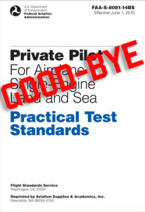
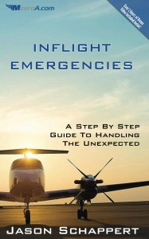

<?xml version="1.0" encoding="UTF-8"?><rss version="2.0"
	xmlns:content="http://purl.org/rss/1.0/modules/content/"
	xmlns:wfw="http://wellformedweb.org/CommentAPI/"
	xmlns:dc="http://purl.org/dc/elements/1.1/"
	xmlns:atom="http://www.w3.org/2005/Atom"
	xmlns:sy="http://purl.org/rss/1.0/modules/syndication/"
	xmlns:slash="http://purl.org/rss/1.0/modules/slash/"
	>

<channel>
	<title>Search Results for &#8220;flight training&#8221; &#8211; MzeroA.com</title>
	<atom:link href="http://www.m0a.com/search/flight+training/feed/rss2/" rel="self" type="application/rss+xml" />
	<link>http://www.m0a.com</link>
	<description>Because A Good Pilot Is Always Learning</description>
	<lastBuildDate>Tue, 22 Dec 2015 20:46:20 +0000</lastBuildDate>
	<language>en-US</language>
	<sy:updatePeriod>hourly</sy:updatePeriod>
	<sy:updateFrequency>1</sy:updateFrequency>
	<generator>https://wordpress.org/?v=4.4</generator>
	<item>
		<title>e6b Flight Computer</title>
		<link>http://www.m0a.com/e6b-flight-computer-2/</link>
		<comments>http://www.m0a.com/e6b-flight-computer-2/#respond</comments>
		<pubDate>Wed, 11 Nov 2015 16:30:24 +0000</pubDate>
		<dc:creator><![CDATA[Jason Schappert]]></dc:creator>
				<category><![CDATA[Private Pilot]]></category>
		<category><![CDATA[Commercial Pilot]]></category>
		<category><![CDATA[e6b flight computer]]></category>

		<guid isPermaLink="false">http://www.m0a.com/?p=4783</guid>
		<description><![CDATA[When is the last time you actually dusted off the ole&#8217; manual e6b? In this technology driven world I bet it&#8217;s been awhile. I truly believe it&#8217;s important to have a strong manual e6b skill set to fall back on during your training and beyond. Interested in checking out our Online Ground School? Visit GroundSchoolAcademy.com]]></description>
				<content:encoded><![CDATA[<p><iframe width="560" height="315" src="https://www.youtube.com/embed/Qhjcb9Y7ZIg" frameborder="0" allowfullscreen></iframe></p>
<p>When is the last time you actually dusted off the ole&#8217; manual e6b? In this technology driven world I bet it&#8217;s been awhile. I truly believe it&#8217;s important to have a strong manual e6b skill set to fall back on during your training and beyond.</p>
<p>Interested in checking out our Online Ground School? Visit <a href="https://groundschoolacademy.com/online-ground-school/">GroundSchoolAcademy.com</a></p>
]]></content:encoded>
			<wfw:commentRss>http://www.m0a.com/e6b-flight-computer-2/feed/</wfw:commentRss>
		<slash:comments>0</slash:comments>
		</item>
		<item>
		<title>What Makes a Great Flight School?</title>
		<link>http://www.m0a.com/what-makes-a-great-flight-school/</link>
		<comments>http://www.m0a.com/what-makes-a-great-flight-school/#respond</comments>
		<pubDate>Mon, 26 Oct 2015 10:45:05 +0000</pubDate>
		<dc:creator><![CDATA[Jason Schappert]]></dc:creator>
				<category><![CDATA[Private Pilot]]></category>
		<category><![CDATA[Flight School]]></category>

		<guid isPermaLink="false">http://www.m0a.com/?p=4651</guid>
		<description><![CDATA[What do you believe makes a great flight school? Is it the management? Instructors? The airplanes? I sat down with my friend Jeffery Wolf of Paragon Flight Training who was named AOPA&#8217;s Top Flight School in 2014 and asked him this very question]]></description>
				<content:encoded><![CDATA[<p><iframe width="560" height="315" src="https://www.youtube.com/embed/GKyWY3utIYQ" frameborder="0" allowfullscreen></iframe></p>
<p>What do you believe makes a great flight school? Is it the management? Instructors? The airplanes? I sat down with my friend Jeffery Wolf of <a href="http://paragonflight.com/">Paragon Flight Training</a> who was named AOPA&#8217;s Top Flight School in 2014 and asked him this very question</p>
]]></content:encoded>
			<wfw:commentRss>http://www.m0a.com/what-makes-a-great-flight-school/feed/</wfw:commentRss>
		<slash:comments>0</slash:comments>
		</item>
		<item>
		<title>Your Checkride Checklist</title>
		<link>http://www.m0a.com/your-checkride-checklist/</link>
		<comments>http://www.m0a.com/your-checkride-checklist/#respond</comments>
		<pubDate>Mon, 24 Aug 2015 14:42:44 +0000</pubDate>
		<dc:creator><![CDATA[Jason Schappert]]></dc:creator>
				<category><![CDATA[Private Pilot]]></category>
		<category><![CDATA[Checkride]]></category>
		<category><![CDATA[Private Pilot Checkride]]></category>

		<guid isPermaLink="false">http://www.m0a.com/?p=4633</guid>
		<description><![CDATA[Did you know that 25% of your checkride is spent on the ground just doing paperwork with the examiner and seeing if you&#8217;ve met the requirements to take the checkride? Did you also know that checkride examiners on a REGULAR basis send students back home because they were missing .1 hours here or one landing [&#8230;]]]></description>
				<content:encoded><![CDATA[</p>
<p><a href="https://ud165.infusionsoft.com/app/storeFront/showProductDetail?productId=48"></a></p>
<p>Did you know that 25% of your checkride is spent on the ground just doing paperwork with the examiner and seeing if you&#8217;ve met the requirements to take the checkride? </p>
<p>Did you also know that checkride examiners on a REGULAR basis send students back home because they were missing .1 hours here or one landing there etc?</p>
<p>In this video I set down with FAA Designated Pilot Examiner Shawn Mullin from <a href="http://iflyelite.com/">Elite Flight Training</a> in Las Vegas who shares his checkride process.</p>
<div class='et_post_video'><iframe width="1080" height="608" src="https://www.youtube.com/embed/r2czFk82G9o?feature=oembed" frameborder="0" allowfullscreen></iframe></div>
]]></content:encoded>
			<wfw:commentRss>http://www.m0a.com/your-checkride-checklist/feed/</wfw:commentRss>
		<slash:comments>0</slash:comments>
		</item>
		<item>
		<title>Private Pilot 101 Webinar Recordings</title>
		<link>http://www.m0a.com/private-pilot-101-webinar-recordings/</link>
		<comments>http://www.m0a.com/private-pilot-101-webinar-recordings/#respond</comments>
		<pubDate>Fri, 31 Jul 2015 22:44:00 +0000</pubDate>
		<dc:creator><![CDATA[Jason Schappert]]></dc:creator>
				<category><![CDATA[Private Pilot]]></category>
		<category><![CDATA[Private Pilot 101]]></category>

		<guid isPermaLink="false">http://www.m0a.com/?p=4630</guid>
		<description><![CDATA[Missed one of our Private Pilot 101 webinar series? Here are the recordings: 7 Ways To Save Money On Your Flight Training The Secret To The Private Pilot FAA Written Test Jason&#8217;s Solo Story + How To Solo Sooner Enjoy &#8211; Jason]]></description>
				<content:encoded><![CDATA[<p>Missed one of our Private Pilot 101 webinar series? Here are the recordings:</p>
<p><strong>7 Ways To Save Money On Your Flight Training</strong><br />
<iframe width="560" height="315" src="https://www.youtube.com/embed/IqujAxLbmec" frameborder="0" allowfullscreen></iframe><br />
<br />
</br></p>
<p><strong>The Secret To The Private Pilot FAA Written Test</strong><br />
<iframe width="420" height="315" src="https://www.youtube.com/embed/og7UFemzNVk" frameborder="0" allowfullscreen></iframe><br />
<br />
</br></p>
<p><strong>Jason&#8217;s Solo Story + How To Solo Sooner</strong><br />
<iframe width="420" height="315" src="https://www.youtube.com/embed/tEwePfbAOnQ" frameborder="0" allowfullscreen></iframe></p>
<p>Enjoy &#8211; Jason</p>
]]></content:encoded>
			<wfw:commentRss>http://www.m0a.com/private-pilot-101-webinar-recordings/feed/</wfw:commentRss>
		<slash:comments>0</slash:comments>
		</item>
		<item>
		<title>Private Pilot Webinars</title>
		<link>http://www.m0a.com/private-pilot-webinars/</link>
		<comments>http://www.m0a.com/private-pilot-webinars/#respond</comments>
		<pubDate>Wed, 22 Jul 2015 11:59:21 +0000</pubDate>
		<dc:creator><![CDATA[Jason Schappert]]></dc:creator>
				<category><![CDATA[Private Pilot]]></category>
		<category><![CDATA[Private Pilot Webinars]]></category>

		<guid isPermaLink="false">http://www.m0a.com/?p=4622</guid>
		<description><![CDATA[Our Private Pilot 101 webinar series is just around the corner! This 3 evening event is totally free to aspiring pilots and student pilots currently in training. All topics are geared towards student pilots however pilots of all levels are certainly welcome. Note: You must signup for each webinar (apologies for the extra work but [&#8230;]]]></description>
				<content:encoded><![CDATA[<p>Our Private Pilot 101 webinar series is just around the corner! This 3 evening event is totally free to aspiring pilots and student pilots currently in training. All topics are geared towards student pilots however pilots of all levels are certainly welcome.</p>
<p>Note: You must signup for each webinar (apologies for the extra work but the process is easy)</p>
<h3>The Schedule:</h3>
<p><strong>7 Ways To Save Money On Your Flight Training</strong><br />
July 28th @ 9pm Eastern<br />
<a href="https://ud165.infusionsoft.com/app/form/272e5be34c65c2061c622c99c8806d1b">CLICK HERE TO RESERVE A SEAT</a> (Only 1,000 seats available)</p>
<p><strong>The Secret To The Private Pilot Written Test</strong><br />
July 29th @ 9pm Eastern<br />
<a href="https://ud165.infusionsoft.com/app/form/d44bb574b40a482e7827ac6d8046ff53">CLICK HERE TO RESERVE A SEAT</a> (Only 1,000 seats available)</p>
<p><strong>How To Solo Sooner + Jason&#8217;s Solo Story</strong><br />
July 30th @ 9pm Eastern<br />
<a href="https://ud165.infusionsoft.com/app/form/923302f6ed89ff7e625c7deff39b01be">CLICK HERE TO RESERVE A SEAT</a> (Only 1,000 seats available)</p>
<p>These webinars are totally free and will be conducted by Jason each night. You&#8217;ll have a chance to ask him questions as well.</p>
<p>Recordings will be made available the following day. HOWEVER please still signup for the webinar so we know who to email the recordings to.</p>
<p></p>
]]></content:encoded>
			<wfw:commentRss>http://www.m0a.com/private-pilot-webinars/feed/</wfw:commentRss>
		<slash:comments>0</slash:comments>
		</item>
		<item>
		<title>5 Things I Do BEYOND The Checklist</title>
		<link>http://www.m0a.com/5-things-i-do-beyond-the-checklist/</link>
		<comments>http://www.m0a.com/5-things-i-do-beyond-the-checklist/#respond</comments>
		<pubDate>Mon, 13 Jul 2015 16:10:42 +0000</pubDate>
		<dc:creator><![CDATA[Jason Schappert]]></dc:creator>
				<category><![CDATA[Private Pilot]]></category>
		<category><![CDATA[Commercial Pilot]]></category>
		<category><![CDATA[Preflight Checklist]]></category>

		<guid isPermaLink="false">http://www.m0a.com/?p=4606</guid>
		<description><![CDATA[For those of you who follow us on Periscope this is the video you got to see &#8220;The Making Of&#8221; For those of you who don&#8217;t you should! Periscope is a neat live streaming app that we&#8217;ve been using to show you behind the scenes at the MzeroA studio and out at the airport. I&#8217;ll [&#8230;]]]></description>
				<content:encoded><![CDATA[<p><iframe width="560" height="315" src="https://www.youtube.com/embed/njRGhnipabM" frameborder="0" allowfullscreen></iframe></p>
<p>For those of you who follow us on <a href="https://www.periscope.tv/#share">Periscope</a> this is the video you got to see &#8220;The Making Of&#8221; For those of you who don&#8217;t you should! <a href="https://www.periscope.tv/#share">Periscope</a> is a neat live streaming app that we&#8217;ve been using to show you behind the scenes at the MzeroA studio and out at the airport. I&#8217;ll also be live streaming from EAA Airventune Oshkosh. Download the Periscope app <a href="https://www.periscope.tv/#share">HERE</a> and search &#8220;MzeroA&#8221; once downloaded to find us </p>
<p>What are 5 things I do beyond the preflight checklist? We often times get in this mundane routine of a preflight. I wanted to give you a few things to look at, do, or consider for your next flight. Enjoy it! &#8211; Jason</p>
<p><em>Note:</em> We didn&#8217;t accept ANY compensation for the products mentioned in this video. They are products we use on a daily basis. Links to them below (not affiliate links either) </p>
<p>The Spot Beacon Is Their New G3 Model<br />
Right Now it&#8217;s 50% off Use Promo Code MZEROA to get FREE Unlmited Tracking (expires July 31st)<br />
<a href="http://www.findmespot.com/SummerSavings">CLICK HERE TO GO TO SPOT&#8217;S WEBSITE</a><br />
The Handheld Radio Was a <a href="http://www.pilotmall.com/product/Yaesu-FTA-750L-Handheld-VHF-Transceiver-w-GPS/yaesu">Vertex Standard by Yaesu</a> (updated model from mine with GPS)<br />
The App Jason Was Using Was <a href="https://www.seattleavionics.com/FlyQEFB.aspx">Seattle Avionics FlyQ</a><br />
The phone number Jason said he calls each flight is 1-800-WX-BRIEF you can also follow them on social media for updates via their <a href="https://twitter.com/1800wxbrief">Twitter Page</a></p>
<p><center></p>
<h1>Want More Free MzeroA Content?</h1>
<p></center></p>
<p>We just released several new episodes in our top rated podcast series (thank you for voting us #1) The podcast links and descriptions are below. Pick which few suite you and listen away! </p>
<p><a href="http://inspireaviationpodcast.com/"></a> <strong>INSPIRE AVIATION</strong><br />
<a href="https://itunes.apple.com/us/podcast/inspire-aviation/id1010695603" target="_blank">CLICK HERE TO OPEN IN iTunes</a> &#8211; Inspire Aviation is geared towards budding pilots in their flight training. How can I save money in my training? How do I over come anxiety or deal with &#8220;bad&#8221; flight instructor? How do I know if I&#8217;m getting the best training possible? How do I even start my flight training? I have no idea!? Scott Carson is our Director of Sales and Marketing and your host for Inspire Aviation. His goal is to Inspire the flight training population and help you save some time and money along the way. Listen in each week as Scott delivers his best tips and interviews pilots not so different from yourself.</p>
<p><a href="https://itunes.apple.com/us/podcast/inspire-aviation/id1010695603" target="_blank">CLICK HERE TO OPEN IN iTunes</a> or <a href="http://inspireaviationpodcast.com/" target="_blank">Click Here To Play It In Your Browser</a><br />
<br />
</br><br />
<a href="http://theprivatepilotpodcast.com/"></a> <strong>The Private Pilot Podcast</strong><br />
<a href="https://itunes.apple.com/us/podcast/private-pilot-podcast-by-mzeroa.com/id1010686786?mt=2" target="_blank">CLICK HERE TO OPEN IN iTunes</a> &#8211; Our Private Pilot Podcast with Jason is geared towards helping you succeed on your private pilot written, checkride, and beyond. In the first episode Jason talks landings and the written test. The are so many facets to your private pilot certificate that it truly deserves it&#8217;s own dedicated show/series. Listen in each week as Jason shares his nearly 10,000 hours of flight training experience.</p>
<p><a href="https://itunes.apple.com/us/podcast/private-pilot-podcast-by-mzeroa.com/id1010686786?mt=2" target="_blank">CLICK HERE TO OPEN IN iTunes</a> or <a href="http://theprivatepilotpodcast.com/" target="_blank">Click Here To Play It In Your Browser</a><br />
<br />
</br></p>
<p><a href="http://instrumentpilotpodcast.com/"></a> <strong>Instrument Pilot Podcast</strong><br />
<a href="https://itunes.apple.com/us/podcast/instrument-pilot-podcast-by/id1010687213?mt=2" target="_blank">CLICK HERE TO OPEN IN iTunes</a> &#8211; It&#8217;s often been called &#8220;The Most Difficult Rating To Earn&#8221; and for good reason instrument flying is complex. There are so many scenarios and possibilities to be quizzed on that the checkride seems like a daunting task. In this podcast dedicated to all topics instrument flying from the written test to the checkride Jason will lead you through popular questions and long held debates as well as help you maintain proficiency as an instrument rated pilot.</p>
<p><a href="https://itunes.apple.com/us/podcast/instrument-pilot-podcast-by/id1010687213?mt=2" target="_blank">CLICK HERE TO OPEN IN iTunes</a> or <a href="http://instrumentpilotpodcast.com/" target="_blank">Click Here To Play It In Your Browser</a><br />
<br />
</br></p>
<p><a href="http://commercialpilotpodcast.com/"></a> <strong>The Commercial Pilot Podcast</strong><br />
<a href="https://itunes.apple.com/us/podcast/commercial-pilot-podcast/id1013207395" target="_blank">CLICK HERE TO OPEN IN iTunes</a> &#8211; Don&#8217;t let anyone ever tell you that the commercial pilot certificate is &#8220;a glorified private pilot certificate&#8221; It&#8217;s not even close. Being a commercial pilot opens up a new window of financial pressures to deliver and make flights you might not have previously. In this new show Jason talks about all aspects of the commercial pilot certificate from earning the hours to even qualify to passing the checkride and making money in aviation for a change </p>
<p><a href="https://itunes.apple.com/us/podcast/commercial-pilot-podcast/id1013207395" target="_blank">CLICK HERE TO OPEN IN iTunes</a> or <a href="http://commercialpilotpodcast.com/" target="_blank">Click Here To Play It In Your Browser</a><br />
<br />
</br></p>
<p><a href="http://cfipodcast.com/"></a> <strong>The Flight Instructor Podcast</strong><br />
<a href="https://itunes.apple.com/us/podcast/cfi-podcast/id1010694405" target="_blank">CLICK HERE TO OPEN IN iTunes</a> &#8211; Lets be honest not everyone is meant to be a CFI (Certificated Flight Instructor) however I&#8217;ll place a bet on you. The fact that you&#8217;re listening to this podcast is a good indication you&#8217;ll be a pretty good CFI. Through this podcast we&#8217;ll talk about not only becoming a CFI and CFII but also the business side of flight instruction.</p>
<p><a href="https://itunes.apple.com/us/podcast/cfi-podcast/id1010694405" target="_blank">CLICK HERE TO OPEN IN iTunes</a> or <a href="http://cfipodcast.com/" target="_blank">Click Here To Play It In Your Browser</a><br />
<br />
</br></p>
]]></content:encoded>
			<wfw:commentRss>http://www.m0a.com/5-things-i-do-beyond-the-checklist/feed/</wfw:commentRss>
		<slash:comments>0</slash:comments>
		</item>
		<item>
		<title>Scholarship</title>
		<link>http://www.m0a.com/scholarship/</link>
		<comments>http://www.m0a.com/scholarship/#respond</comments>
		<pubDate>Thu, 09 Jul 2015 16:34:30 +0000</pubDate>
		<dc:creator><![CDATA[Jason Schappert]]></dc:creator>
		
		<guid isPermaLink="false">http://www.m0a.com/?page_id=4520</guid>
		<description><![CDATA[]]></description>
				<content:encoded><![CDATA[<p><div class="et_pb_section et_pb_section_parallax et_section_regular" style='background-color:#1e73be;'>
			<div class="et_parallax_bg et_pb_parallax_css" style="background-image: url(http://192.185.147.102/~m0atest/wp-content/uploads/2014/01/divi-hero.jpg);"></div>
			
				
				<div class="et_pb_row">
			<div class="et_pb_column et_pb_column_1_2">
			<div class="et_pb_video">
			<div class="et_pb_video_box">
				<iframe width="1080" height="608" src="https://www.youtube.com/embed/lAT9NXTIUJk?feature=oembed" frameborder="0" allowfullscreen></iframe>
			</div>
			
		</div>
		</div> <!-- .et_pb_column --><div class="et_pb_column et_pb_column_1_2">
			<div class="et_pb_text et_pb_bg_layout_dark et_pb_text_align_center .et_pb_text p:last-of-type {  color: #f8f8f8; } h2 {  color: #00ff00; }">
			<a href="http://192.185.147.102/~m0atest/wp-content/uploads/2014/01/mzeroa-hero-text.png"></a>
		</div> <!-- .et_pb_text --><div class="et_pb_promo et_pb_bg_layout_dark et_pb_text_align_center et_pb_no_bg">
			<div class="et_pb_promo_description">
				
				
			</div>
			
		</div>
		</div> <!-- .et_pb_column -->
		</div> <!-- .et_pb_row -->
			
		</div> <!-- .et_pb_section --><div class="et_pb_section et_section_regular" style='background-color:#286ba9;'>
			
			
				
				<div class="et_pb_row">
			<div class="et_pb_column et_pb_column_4_4">
			<div class="et_pb_text et_pb_bg_layout_dark et_pb_text_align_center">
			
<h1>MzeroA.com Flight Training Scholarship</h1>
<p>Online Course &amp; Full Registration to the Women in Aviation Conference</p>
<p>1) MzeroA.com provides online flight training to prepare you for your written and oral exams. The course is good for those pursuing private pilot, instrument pilot or commercial pilot ratings. The scholarship includes tuition and 8 books related to your flight training. </p>
<p>2) Scholarship winner will also receive a full registration to the 2016 Women in Aviation Conference. Along with access to seminars and multiple networking opportunities, we will introduce the winner to key people in aviation who share their experiences.</p>
<p>This scholarship is awarded internationally and there are no pre-requisites like flight time, or accomplishments that are required.</p>
<p>The MzeroA.com Flight Training Scholarship does not include FAA testing fees.</p>
<p>Students have one (1) year to complete all online training.</p>
<p>Scholarship Value $1,500
		</div> <!-- .et_pb_text -->
		</div> <!-- .et_pb_column -->
		</div> <!-- .et_pb_row -->
			
		</div> <!-- .et_pb_section --><div class="et_pb_section et_section_regular">
			
			
				
				<div class="et_pb_row">
			<div class="et_pb_column et_pb_column_1_2">
			<div class="et_pb_blurb et_pb_bg_layout_light et_pb_text_align_left et_pb_blurb_position_top">
			<div class="et_pb_blurb_content">
				
				<h4>Requirements</h4>
				Our Requirements:</p>
<ul>
<li>Submit a video titled “Your Name &#8211; MzeroA.com Scholarship WAI 2016” Tell us why you fly or want to fly.</li>
</ul>
<p>WAI Requirements:</p>
<ul>
<li><a href="http://wai.org/education/2016scholarship_app.pdf" target="_blank">Official WAI application form</a></li>
<li><a href="http://wai.org/education/guidelines.cfm" target="_blank">Guidelines</a></li>
<li>Two one-page recommendation letters (originals &#8211; no photocopies)</li>
<li>Typed, descriptive 500-word essay</li>
<li>Professional résumé</li>
<li>Copies of all aviation and medical certificates and the last three pages of your pilot logbook (if applicable)</li>
</ul>
<p>Descriptive essay and résumé should address the following:</p>
<ul>
<li>Your aviation history and goals</li>
<li>what you have done for yourself to achieve your goals</li>
<li>where you see yourself in five and ten years</li>
<li>how the scholarship will help you achieve your objective and your present financial need</li>
<li>educational scholarships, awards and honors</li>
<li>flight or other training/education for which you need assistance; how your previous training was financed</li>
<li>where you would obtain the training and the hourly rate for the instructor, aircraft, and simulators, or </li>
<li>other costs, if applying for a cash scholarship</li>
<li>demonstrated involvement in aviation activities</li>
<li>other applicable information as requested for each specific award/grant/scholarship</li>
</ul>

			</div> <!-- .et_pb_blurb_content -->
		</div> <!-- .et_pb_blurb -->
		</div> <!-- .et_pb_column --><div class="et_pb_column et_pb_column_1_2">
			<div class="et_pb_blurb et_pb_bg_layout_light et_pb_text_align_left et_pb_blurb_position_top">
			<div class="et_pb_blurb_content">
				
				<h4>Apply Now</h4>
				We are currently accepting submissions for the 2016 Scholarships.
                <div class='gf_browser_unknown gform_wrapper' id='gform_wrapper_5' ><form method='post' enctype='multipart/form-data'  id='gform_5'  action='/search/flight+training/feed/rss2/'>
                        <div class='gform_body'><ul id='gform_fields_5' class='gform_fields top_label form_sublabel_below description_below'><li id='field_5_1' class='gfield gfield_contains_required field_sublabel_below field_description_below' ><label class='gfield_label' for='input_5_1_3' >Name<span class='gfield_required'>*</span></label><div class='ginput_complex ginput_container no_prefix has_first_name no_middle_name has_last_name no_suffix gf_name_has_2 ginput_container_name' id='input_5_1'>
                            
                            <span id='input_5_1_3_container' class='name_first' >
                                                    <input type='text' name='input_1.3' id='input_5_1_3' value='' aria-label='First name' tabindex='2'  />
                                                    <label for='input_5_1_3' >First</label>
                                                </span>
                            
                            <span id='input_5_1_6_container' class='name_last' >
                                                    <input type='text' name='input_1.6' id='input_5_1_6' value='' aria-label='Last name' tabindex='4'  />
                                                    <label for='input_5_1_6' >Last</label>
                                                </span>
                            
                        </div></li><li id='field_5_2' class='gfield gfield_contains_required field_sublabel_below field_description_below' ><label class='gfield_label' for='input_5_2' >Email<span class='gfield_required'>*</span></label><div class='ginput_container ginput_container_email'>
                            <input name='input_2' id='input_5_2' type='text' value='' class='medium' tabindex='6'   />
                        </div></li><li id='field_5_4' class='gfield field_sublabel_below field_description_below' ><label class='gfield_label' for='input_5_4' >Message</label><div class='ginput_container ginput_container_textarea'>
					<textarea name='input_4' id='input_5_4' class='textarea medium' tabindex='7'    rows='10' cols='50'></textarea>
				</div></li><li id='field_5_3' class='gfield field_sublabel_below field_description_below' ><label class='gfield_label' for='input_5_3' >File</label><div class='ginput_container ginput_container_fileupload'><input type='hidden' name='MAX_FILE_SIZE' value='2097152' /><input name='input_3' id='input_5_3' type='file' class='medium' aria-describedby='extensions_message' tabindex='8' /><span id='extensions_message' class='screen-reader-text'></span></div></li>
                            </ul></div>
        <div class='gform_footer top_label'> <input type='submit' id='gform_submit_button_5' class='gform_button button' value='Submit' tabindex='9' onclick='if(window["gf_submitting_5"]){return false;}  window["gf_submitting_5"]=true;  ' /> 
            <input type='hidden' class='gform_hidden' name='is_submit_5' value='1' />
            <input type='hidden' class='gform_hidden' name='gform_submit' value='5' />
            
            <input type='hidden' class='gform_hidden' name='gform_unique_id' value='' />
            <input type='hidden' class='gform_hidden' name='state_5' value='WyJbXSIsIjk5OGQwMzBlYjNhODc5Yjg4YjVkN2NmNjE5YmVmODEzIl0=' />
            <input type='hidden' class='gform_hidden' name='gform_target_page_number_5' id='gform_target_page_number_5' value='0' />
            <input type='hidden' class='gform_hidden' name='gform_source_page_number_5' id='gform_source_page_number_5' value='1' />
            <input type='hidden' name='gform_field_values' value='' />
            
        </div>
                        </form>
                        </div><script type='text/javascript'> if(typeof gf_global == 'undefined') var gf_global = {"gf_currency_config":{"name":"U.S. Dollar","symbol_left":"$","symbol_right":"","symbol_padding":"","thousand_separator":",","decimal_separator":".","decimals":2},"base_url":"http:\/\/www.m0a.com\/wordpress\/wp-content\/plugins\/gravityforms","number_formats":[],"spinnerUrl":"http:\/\/www.m0a.com\/wordpress\/wp-content\/plugins\/gravityforms\/images\/spinner.gif"};jQuery(document).bind('gform_post_render', function(event, formId, currentPage){if(formId == 5) {} } );jQuery(document).bind('gform_post_conditional_logic', function(event, formId, fields, isInit){} );</script><script type='text/javascript'> jQuery(document).ready(function(){jQuery(document).trigger('gform_post_render', [5, 1]) } ); </script>
<p>You can also submit your application and video to us by email <a href="mailto:ashley@mzeroa.com">ashley@mzeroa.com</a>. </p>
<p>A copy of WAI Scholarship application materials should be mailed to:<br />
WAI Scholarships<br />
3647 State Route 503 South<br />
West Alexandria, OH 45381</p>
<p>Our last day for submission is January 31, 2016. We will announce the winners by February 14th.
			</div> <!-- .et_pb_blurb_content -->
		</div> <!-- .et_pb_blurb -->
		</div> <!-- .et_pb_column -->
		</div> <!-- .et_pb_row -->
			
		</div> <!-- .et_pb_section --><div class="et_pb_section et_section_regular" style='background-color:#dbdbdb;'>
			
			
				
				<div class="et_pb_row">
			<div class="et_pb_column et_pb_column_2_3">
			<div class="et_pb_text et_pb_bg_layout_light et_pb_text_align_left">
			
<h2>FAQ</h2>
<ul>
<li>Do I have to be a current member of WAI to receive a scholarship?</li>
<p>Yes, your WAI membership status must be active through the month of the Conference (March) at the time of sending application packets. Join or renew before November 1, 2014 to qualify this year.</p>
<li>I’m a guy – can I apply for a scholarship?</li>
<p>Yes, men can apply for scholarships as well as women.</p>
<li>WAI Scholarships</li>
<p><a href="http://wai.org/education/scholarships.cfm">http://wai.org/education/scholarships.cfm</a>
</ul>

		</div> <!-- .et_pb_text -->
		</div> <!-- .et_pb_column --><div class="et_pb_column et_pb_column_1_3">
			<div class="et_pb_team_member et_pb_bg_layout_light clearfix">
			<div class="et_pb_team_member_image et-waypoint et_pb_animation_fade_in">
				
			</div>
			<div class="et_pb_team_member_description">
				<h4>Ashley Schappert</h4>
				<p class="et_pb_member_position">CEO MzeroA.com</p>
				Contact Ashley<br />
Email: <a href="mailto:ashley@mzeroa.com">ashley@mzeroa.com</a><br />
Office: 855-737-1200
				<ul class="et_pb_member_social_links"><li><a href="https://twitter.com/ashleyschappert" class="et_pb_font_icon et_pb_twitter_icon"><span>Twitter</span></a></li><li><a href="https://www.linkedin.com/pub/ashley-schappert/20/193/678" class="et_pb_font_icon et_pb_linkedin_icon"><span>LinkedIn</span></a></li></ul>
			</div> <!-- .et_pb_team_member_description -->
		</div> <!-- .et_pb_team_member -->
		</div> <!-- .et_pb_column -->
		</div> <!-- .et_pb_row -->
			
		</div> <!-- .et_pb_section --></p>
]]></content:encoded>
			<wfw:commentRss>http://www.m0a.com/scholarship/feed/</wfw:commentRss>
		<slash:comments>0</slash:comments>
		</item>
		<item>
		<title>New Aviation Podcast Series</title>
		<link>http://www.m0a.com/new-aviation-podcast-series/</link>
		<comments>http://www.m0a.com/new-aviation-podcast-series/#respond</comments>
		<pubDate>Tue, 30 Jun 2015 11:04:33 +0000</pubDate>
		<dc:creator><![CDATA[Jason Schappert]]></dc:creator>
				<category><![CDATA[Private Pilot]]></category>
		<category><![CDATA[Instrument Pilot]]></category>
		<category><![CDATA[Commercial Pilot]]></category>
		<category><![CDATA[CFI]]></category>
		<category><![CDATA[Aviation Podcast]]></category>

		<guid isPermaLink="false">http://www.m0a.com/?p=4567</guid>
		<description><![CDATA[The team here at MzeroA.com is always thinking of new ways to deliver great content that you can consume on the go. After all a good pilot is always learning right? There are plenty of aviation podcasts out there but nothing as hyper focused and dedicated to flight training like our new series. I&#8217;m pleased [&#8230;]]]></description>
				<content:encoded><![CDATA[<p>The team here at MzeroA.com is always thinking of new ways to deliver great content that you can consume on the go. After all a good pilot is always learning right? There are plenty of aviation podcasts out there but nothing as hyper focused and dedicated to flight training like our new series.</p>
<p>I&#8217;m pleased to announce 5 new aviation podcasts that apply to anyone reading this.</p>
<p><a href="http://inspireaviationpodcast.com/"></a> <strong>INSPIRE AVIATION</strong><br />
<a href="https://itunes.apple.com/us/podcast/inspire-aviation/id1010695603" target="_blank">CLICK HERE TO OPEN IN iTunes</a> &#8211; Inspire Aviation is geared towards budding pilots in their flight training. How can I save money in my training? How do I over come anxiety or deal with &#8220;bad&#8221; flight instructor? How do I know if I&#8217;m getting the best training possible? How do I even start my flight training? I have no idea!? Scott Carson is our Director of Sales and Marketing and your host for Inspire Aviation. His goal is to Inspire the flight training population and help you save some time and money along the way. Listen in each week as Scott delivers his best tips and interviews pilots not so different from yourself.</p>
<p><a href="https://itunes.apple.com/us/podcast/inspire-aviation/id1010695603" target="_blank">CLICK HERE TO OPEN IN iTunes</a> or <a href="http://inspireaviationpodcast.com/" target="_blank">Click Here To Play It In Your Browser</a><br />
<br />
</br><br />
<a href="http://theprivatepilotpodcast.com/"></a> <strong>The Private Pilot Podcast</strong><br />
<a href="https://itunes.apple.com/us/podcast/private-pilot-podcast-by-mzeroa.com/id1010686786?mt=2" target="_blank">CLICK HERE TO OPEN IN iTunes</a> &#8211; Our Private Pilot Podcast with Jason is geared towards helping you succeed on your private pilot written, checkride, and beyond. In the first episode Jason talks landings and the written test. The are so many facets to your private pilot certificate that it truly deserves it&#8217;s own dedicated show/series. Listen in each week as Jason shares his nearly 10,000 hours of flight training experience.</p>
<p><a href="https://itunes.apple.com/us/podcast/private-pilot-podcast-by-mzeroa.com/id1010686786?mt=2" target="_blank">CLICK HERE TO OPEN IN iTunes</a> or <a href="http://theprivatepilotpodcast.com/" target="_blank">Click Here To Play It In Your Browser</a><br />
<br />
</br></p>
<p><a href="http://instrumentpilotpodcast.com/"></a> <strong>Instrument Pilot Podcast</strong><br />
<a href="https://itunes.apple.com/us/podcast/instrument-pilot-podcast-by/id1010687213?mt=2" target="_blank">CLICK HERE TO OPEN IN iTunes</a> &#8211; It&#8217;s often been called &#8220;The Most Difficult Rating To Earn&#8221; and for good reason instrument flying is complex. There are so many scenarios and possibilities to be quizzed on that the checkride seems like a daunting task. In this podcast dedicated to all topics instrument flying from the written test to the checkride Jason will lead you through popular questions and long held debates as well as help you maintain proficiency as an instrument rated pilot.</p>
<p><a href="https://itunes.apple.com/us/podcast/instrument-pilot-podcast-by/id1010687213?mt=2" target="_blank">CLICK HERE TO OPEN IN iTunes</a> or <a href="http://instrumentpilotpodcast.com/" target="_blank">Click Here To Play It In Your Browser</a><br />
<br />
</br></p>
<p><a href="http://commercialpilotpodcast.com/"></a> <strong>The Commercial Pilot Podcast</strong><br />
<a href="https://itunes.apple.com/us/podcast/commercial-pilot-podcast/id1013207395" target="_blank">CLICK HERE TO OPEN IN iTunes</a> &#8211; Don&#8217;t let anyone ever tell you that the commercial pilot certificate is &#8220;a glorified private pilot certificate&#8221; It&#8217;s not even close. Being a commercial pilot opens up a new window of financial pressures to deliver and make flights you might not have previously. In this new show Jason talks about all aspects of the commercial pilot certificate from earning the hours to even qualify to passing the checkride and making money in aviation for a change </p>
<p><a href="https://itunes.apple.com/us/podcast/commercial-pilot-podcast/id1013207395" target="_blank">CLICK HERE TO OPEN IN iTunes</a> or <a href="http://commercialpilotpodcast.com/" target="_blank">Click Here To Play It In Your Browser</a><br />
<br />
</br></p>
<p><a href="http://cfipodcast.com/"></a> <strong>The Flight Instructor Podcast</strong><br />
<a href="https://itunes.apple.com/us/podcast/cfi-podcast/id1010694405" target="_blank">CLICK HERE TO OPEN IN iTunes</a> &#8211; Lets be honest not everyone is meant to be a CFI (Certificated Flight Instructor) however I&#8217;ll place a bet on you. The fact that you&#8217;re listening to this podcast is a good indication you&#8217;ll be a pretty good CFI. Through this podcast we&#8217;ll talk about not only becoming a CFI and CFII but also the business side of flight instruction.</p>
<p><a href="https://itunes.apple.com/us/podcast/cfi-podcast/id1010694405" target="_blank">CLICK HERE TO OPEN IN iTunes</a> or <a href="http://cfipodcast.com/" target="_blank">Click Here To Play It In Your Browser</a><br />
<br />
</br></p>
<p>All these podcast can be found in iTunes be sure to subscribe in iTunes and leave us an honest review!</p>
<p>PS: Flight Training Radio and Coffee Break Flight Instruction are coming back in a few weeks as well so find them in iTunes as well! &#8211; Jason</p>
]]></content:encoded>
			<wfw:commentRss>http://www.m0a.com/new-aviation-podcast-series/feed/</wfw:commentRss>
		<slash:comments>0</slash:comments>
		</item>
		<item>
		<title>Getting The Most Out of Your Flight Training</title>
		<link>http://www.m0a.com/getting-the-most-out-of-your-flight-training/</link>
		<comments>http://www.m0a.com/getting-the-most-out-of-your-flight-training/#respond</comments>
		<pubDate>Tue, 14 Apr 2015 20:49:53 +0000</pubDate>
		<dc:creator><![CDATA[Jason Schappert]]></dc:creator>
		
		<guid isPermaLink="false">http://www.m0a.com/?page_id=4480</guid>
		<description><![CDATA[Scroll Down and Click Play to Watch The Quick Video]]></description>
				<content:encoded><![CDATA[<p>Scroll Down and Click Play to Watch The Quick Video</p>
<p><iframe src="https://player.vimeo.com/video/123488354" width="500" height="281" frameborder="0" webkitallowfullscreen mozallowfullscreen allowfullscreen></iframe></p>
]]></content:encoded>
			<wfw:commentRss>http://www.m0a.com/getting-the-most-out-of-your-flight-training/feed/</wfw:commentRss>
		<slash:comments>0</slash:comments>
		</item>
		<item>
		<title>Private Pilot Blueprint Webinar Recording</title>
		<link>http://www.m0a.com/private-pilot-blueprint-webinar-recording/</link>
		<comments>http://www.m0a.com/private-pilot-blueprint-webinar-recording/#respond</comments>
		<pubDate>Tue, 14 Apr 2015 20:40:24 +0000</pubDate>
		<dc:creator><![CDATA[Jason Schappert]]></dc:creator>
		
		<guid isPermaLink="false">http://www.m0a.com/?page_id=4474</guid>
		<description><![CDATA[Learn how to get the most out of your flight training in this video specially tailored to you!]]></description>
				<content:encoded><![CDATA[<p>Learn how to get the most out of your flight training in this video specially tailored to you!</p>
<p><iframe src="https://player.vimeo.com/video/122316640" width="500" height="281" frameborder="0" webkitallowfullscreen mozallowfullscreen allowfullscreen></iframe></p>

                <div class='gf_browser_unknown gform_wrapper' id='gform_wrapper_4' ><form method='post' enctype='multipart/form-data'  id='gform_4'  action='/search/flight+training/feed/rss2/'>
                        <div class='gform_body'><ul id='gform_fields_4' class='gform_fields top_label form_sublabel_below description_below'><li id='field_4_2' class='gfield gfield_contains_required field_sublabel_below field_description_below' ><label class='gfield_label' for='input_4_2_3' >Name<span class='gfield_required'>*</span></label><div class='ginput_complex ginput_container no_prefix has_first_name no_middle_name has_last_name no_suffix gf_name_has_2 ginput_container_name' id='input_4_2'>
                            
                            <span id='input_4_2_3_container' class='name_first' >
                                                    <input type='text' name='input_2.3' id='input_4_2_3' value='' aria-label='First name' tabindex='2'  />
                                                    <label for='input_4_2_3' >First</label>
                                                </span>
                            
                            <span id='input_4_2_6_container' class='name_last' >
                                                    <input type='text' name='input_2.6' id='input_4_2_6' value='' aria-label='Last name' tabindex='4'  />
                                                    <label for='input_4_2_6' >Last</label>
                                                </span>
                            
                        </div></li><li id='field_4_4' class='gfield gfield_contains_required field_sublabel_below field_description_below' ><label class='gfield_label' for='input_4_4' >Email<span class='gfield_required'>*</span></label><div class='ginput_container ginput_container_email'>
                            <input name='input_4' id='input_4_4' type='text' value='' class='medium' tabindex='6'   />
                        </div></li><li id='field_4_3' class='gfield gfield_contains_required field_sublabel_below field_description_below' ><label class='gfield_label' for='input_4_3' >Your Question<span class='gfield_required'>*</span></label><div class='ginput_container ginput_container_textarea'>
					<textarea name='input_3' id='input_4_3' class='textarea medium' tabindex='7'    rows='10' cols='50'></textarea>
				</div></li>
                            </ul></div>
        <div class='gform_footer top_label'> <input type='submit' id='gform_submit_button_4' class='gform_button button' value='Submit' tabindex='8' onclick='if(window["gf_submitting_4"]){return false;}  window["gf_submitting_4"]=true;  ' /> 
            <input type='hidden' class='gform_hidden' name='is_submit_4' value='1' />
            <input type='hidden' class='gform_hidden' name='gform_submit' value='4' />
            
            <input type='hidden' class='gform_hidden' name='gform_unique_id' value='' />
            <input type='hidden' class='gform_hidden' name='state_4' value='WyJbXSIsIjk5OGQwMzBlYjNhODc5Yjg4YjVkN2NmNjE5YmVmODEzIl0=' />
            <input type='hidden' class='gform_hidden' name='gform_target_page_number_4' id='gform_target_page_number_4' value='0' />
            <input type='hidden' class='gform_hidden' name='gform_source_page_number_4' id='gform_source_page_number_4' value='1' />
            <input type='hidden' name='gform_field_values' value='' />
            
        </div>
                        </form>
                        </div><script type='text/javascript'> if(typeof gf_global == 'undefined') var gf_global = {"gf_currency_config":{"name":"U.S. Dollar","symbol_left":"$","symbol_right":"","symbol_padding":"","thousand_separator":",","decimal_separator":".","decimals":2},"base_url":"http:\/\/www.m0a.com\/wordpress\/wp-content\/plugins\/gravityforms","number_formats":[],"spinnerUrl":"http:\/\/www.m0a.com\/wordpress\/wp-content\/plugins\/gravityforms\/images\/spinner.gif"};jQuery(document).bind('gform_post_render', function(event, formId, currentPage){if(formId == 4) {} } );jQuery(document).bind('gform_post_conditional_logic', function(event, formId, fields, isInit){} );</script><script type='text/javascript'> jQuery(document).ready(function(){jQuery(document).trigger('gform_post_render', [4, 1]) } ); </script>
]]></content:encoded>
			<wfw:commentRss>http://www.m0a.com/private-pilot-blueprint-webinar-recording/feed/</wfw:commentRss>
		<slash:comments>0</slash:comments>
		</item>
		<item>
		<title>Home</title>
		<link>http://www.m0a.com/</link>
		<comments>http://www.m0a.com/#respond</comments>
		<pubDate>Mon, 30 Mar 2015 14:17:42 +0000</pubDate>
		<dc:creator><![CDATA[Jason Schappert]]></dc:creator>
		
		<guid isPermaLink="false">http://www.m0a.com/?page_id=4396</guid>
		<description><![CDATA[]]></description>
				<content:encoded><![CDATA[<p><div class="et_pb_section et_pb_section_parallax et_section_regular" style='background-color:#1e73be;'>
			<div class="et_parallax_bg et_pb_parallax_css" style="background-image: url(http://192.185.147.102/~m0atest/wp-content/uploads/2014/01/divi-hero.jpg);"></div>
			
				
				<div class="et_pb_row">
			<div class="et_pb_column et_pb_column_1_2">
			<div class="et_pb_video">
			<div class="et_pb_video_box">
				<iframe src="https://player.vimeo.com/video/123314728" width="1080" height="608" frameborder="0" title="intro v2" webkitallowfullscreen mozallowfullscreen allowfullscreen></iframe>
			</div>
			
		</div>
		</div> <!-- .et_pb_column --><div class="et_pb_column et_pb_column_1_2">
			<div class="et_pb_text et_pb_bg_layout_dark et_pb_text_align_center .et_pb_text p:last-of-type {  color: #f8f8f8; } h2 {  color: #00ff00; }">
			
		</div> <!-- .et_pb_text --><div class="et_pb_promo et_pb_bg_layout_dark et_pb_text_align_center et_pb_no_bg">
			<div class="et_pb_promo_description">
				
				
			</div>
			<a class="et_pb_promo_button" href="#joinlink">Learn More</a>
		</div>
		</div> <!-- .et_pb_column -->
		</div> <!-- .et_pb_row -->
			
		</div> <!-- .et_pb_section --><div class="et_pb_section et_section_regular" style='background-color:#f8f8f8;'>
			
			
				
				<div class="et_pb_row">
			<div class="et_pb_column et_pb_column_1_4">
			
		</div> <!-- .et_pb_column --><div class="et_pb_column et_pb_column_1_4">
			
		</div> <!-- .et_pb_column --><div class="et_pb_column et_pb_column_1_4">
			
		</div> <!-- .et_pb_column --><div class="et_pb_column et_pb_column_1_4">
			
		</div> <!-- .et_pb_column -->
		</div> <!-- .et_pb_row -->
			
		</div> <!-- .et_pb_section --><div class="et_pb_section et_section_regular" style='background-color:#286ba9;'>
			
			
				
				<div class="et_pb_row">
			<div class="et_pb_column et_pb_column_4_4">
			<div class="et_pb_text et_pb_bg_layout_dark et_pb_text_align_center">
			<a name="joinlink"></a><br />
<h1>Where Are You in Your Training?</h1>

		</div> <!-- .et_pb_text -->
		</div> <!-- .et_pb_column -->
		</div> <!-- .et_pb_row --><div class="et_pb_row">
			<div class="et_pb_column et_pb_column_1_4">
			<div class="et_pb_promo et_pb_bg_layout_dark et_pb_text_align_right et_pb_no_bg">
			<div class="et_pb_promo_description">
				
				
			</div>
			<a class="et_pb_promo_button" href="../../../../home/private-pilot/index.html">Private Pilot</a>
		</div>
		</div> <!-- .et_pb_column --><div class="et_pb_column et_pb_column_1_4">
			<div class="et_pb_promo et_pb_bg_layout_dark et_pb_text_align_center et_pb_no_bg">
			<div class="et_pb_promo_description">
				
				
			</div>
			<a class="et_pb_promo_button" href="../../../../home/instrument-pilot/index.html">Instrument Pilot</a>
		</div>
		</div> <!-- .et_pb_column --><div class="et_pb_column et_pb_column_1_4">
			<div class="et_pb_promo et_pb_bg_layout_dark et_pb_text_align_center et_pb_no_bg">
			<div class="et_pb_promo_description">
				
				
			</div>
			<a class="et_pb_promo_button" href="../../../../home/commercial-pilot/index.html">Commercial Pilot</a>
		</div>
		</div> <!-- .et_pb_column --><div class="et_pb_column et_pb_column_1_4">
			<div class="et_pb_promo et_pb_bg_layout_dark et_pb_text_align_left et_pb_no_bg">
			<div class="et_pb_promo_description">
				
				
			</div>
			<a class="et_pb_promo_button" href="../../../../home/cfi/index.html">CFI</a>
		</div>
		</div> <!-- .et_pb_column -->
		</div> <!-- .et_pb_row -->
			
		</div> <!-- .et_pb_section --><div class="et_pb_section et_section_regular">
			
			
				
				<div class="et_pb_row">
			<div class="et_pb_column et_pb_column_4_4">
			<div class="et_pb_blog_grid_wrapper"><div class="et_pb_blog_grid clearfix et_pb_bg_layout_light">
			
		<article id="post-4802" class="et_pb_post et_pb_no_thumb post-4802 post type-post status-publish format-standard hentry category-uncategorized">

		
									<h2><a href="../../../../flying-again-is-now-shipping/index.html">Flying Again Is Now Shipping</a></h2>
			
			<p class="post-meta">  Dec 22, 2015  </p>Wow what a journey it&#8217;s been. If you told me we were going to make a movie in just under a year I would have told you that would be impossible. Yet thanks to fans like you and the great team here at MzeroA.com we made it happen! Still need to order your copy? CLICK HERE TO ORDER IT Want to see the trailer first? Scroll down&#8230; CLICK HERE TO ORDER... <a href="../../../../flying-again-is-now-shipping/index.html" class="more-link" >read more</a>		
		</article> <!-- .et_pb_post -->

		<article id="post-4783" class="et_pb_post et_pb_no_thumb post-4783 post type-post status-publish format-standard hentry category-private-pilot category-commercial-pilot tag-e6b-flight-computer">

		
									<h2><a href="../../../../e6b-flight-computer-2/index.html">e6b Flight Computer</a></h2>
			
			<p class="post-meta">  Nov 11, 2015  </p>When is the last time you actually dusted off the ole&#8217; manual e6b? In this technology driven world I bet it&#8217;s been awhile. I truly believe it&#8217;s important to have a strong manual e6b skill set to fall back on during your training and beyond. Interested in checking out our Online Ground School? Visit... <a href="../../../../e6b-flight-computer-2/index.html" class="more-link" >read more</a>		
		</article> <!-- .et_pb_post -->

		<article id="post-4651" class="et_pb_post et_pb_no_thumb post-4651 post type-post status-publish format-standard hentry category-private-pilot tag-flight-school">

		
									<h2><a href="../../../../what-makes-a-great-flight-school/index.html">What Makes a Great Flight School?</a></h2>
			
			<p class="post-meta">  Oct 26, 2015  </p>What do you believe makes a great flight school? Is it the management? Instructors? The airplanes? I sat down with my friend Jeffery Wolf of Paragon Flight Training who was named AOPA&#8217;s Top Flight School in 2014 and asked him this very... <a href="../../../../what-makes-a-great-flight-school/index.html" class="more-link" >read more</a>		
		</article> <!-- .et_pb_post -->
</div> <!-- .et_pb_posts --><div class="pagination clearfix">
	<div class="alignleft"><a href="page/2/index.html" >&laquo; Older Entries</a></div>
	<div class="alignright"></div>
</div>
		</div>
		</div> <!-- .et_pb_column -->
		</div> <!-- .et_pb_row -->
			
		</div> <!-- .et_pb_section --><div class="et_pb_section et_pb_inner_shadow et_section_regular" style='background-color:#b8babc;'>
			
			
				
				<div class="et_pb_row">
			<div class="et_pb_column et_pb_column_1_4">
			<a href="http://flighttrainingradio.com" target="_blank"></a>
		</div> <!-- .et_pb_column --><div class="et_pb_column et_pb_column_1_4">
			<a href="http://coffeebreakflightinstruction.com" target="_blank"></a>
		</div> <!-- .et_pb_column --><div class="et_pb_column et_pb_column_1_4">
			<a href="http://inspireaviationpodcast.com" target="_blank"></a>
		</div> <!-- .et_pb_column --><div class="et_pb_column et_pb_column_1_4">
			<a href="http://goodpilotmagazine.com" target="_blank"></a>
		</div> <!-- .et_pb_column -->
		</div> <!-- .et_pb_row -->
			
		</div> <!-- .et_pb_section --><div class="et_pb_section et_section_regular" style='background-color:#ffffff;'>
			
			
				
				<div class="et_pb_row">
			<div class="et_pb_column et_pb_column_1_2">
			<div class="et_pb_testimonial et_pb_testimonial_no_image et_pb_bg_layout_light et_pb_text_align_left clearfix" style="background-color: #f5f5f5;">
			
			<div class="et_pb_testimonial_description">
				One place I spent a lot of time was with Jason Schappert and MzeroA. Primarily because the videography that brings you into the cockpit and shows you what you’re doing in terms of controlling the airplane, is all part of the preparation and studying that’s incredibly valuable before you even get into the cockpit of the airplane.
				<strong class="et_pb_testimonial_author">Jim Minow</strong>
				<p class="et_pb_testimonial_meta">Executive Director AOPA Foundation</p>
			</div> <!-- .et_pb_testimonial_description -->
		</div> <!-- .et_pb_testimonial -->
		</div> <!-- .et_pb_column --><div class="et_pb_column et_pb_column_1_2">
			<div class="et_pb_testimonial et_pb_testimonial_no_image et_pb_bg_layout_light et_pb_text_align_left clearfix" style="background-color: #f5f5f5;">
			
			<div class="et_pb_testimonial_description">
				I have enjoyed your online ground school. It was just what I was looking for. This course has allowed me to learn new things, keep up the knowledge part of flying and to interact with you and other pilots through the weekly workshops, monthly check rides and webinars.</p>
<p>I have also enjoyed and benefited from the frequent e-mails you have sent. It has also made me realize confidence in my knowledge skills and allowed me to move on to the IFR ground work I have been eager to get to.
				<strong class="et_pb_testimonial_author">Dean Hoopengardner</strong>
				<p class="et_pb_testimonial_meta">Private Pilot</p>
			</div> <!-- .et_pb_testimonial_description -->
		</div> <!-- .et_pb_testimonial -->
		</div> <!-- .et_pb_column -->
		</div> <!-- .et_pb_row -->
			
		</div> <!-- .et_pb_section --></p>
]]></content:encoded>
			<wfw:commentRss>http://www.m0a.com/home/feed/</wfw:commentRss>
		<slash:comments>0</slash:comments>
		</item>
		<item>
		<title>Inspire Aviation Episode 1</title>
		<link>http://www.m0a.com/inspire-aviation-episode-1/</link>
		<comments>http://www.m0a.com/inspire-aviation-episode-1/#respond</comments>
		<pubDate>Thu, 12 Mar 2015 11:25:05 +0000</pubDate>
		<dc:creator><![CDATA[Jason Schappert]]></dc:creator>
				<category><![CDATA[Inspire Aviation]]></category>
		<category><![CDATA[Private Pilot]]></category>

		<guid isPermaLink="false">http://www.m0a.com/?p=4313</guid>
		<description><![CDATA[FIRST EPISODE IS GOING LIVE THURSDAY MARCH 12th at 8pm Eastern! We&#8217;re trying something new. It&#8217;s called &#8220;Inspire Aviation&#8221; and let me explain to you how it came about. When we first hired Scott Carson our new Director of Sales &#038; Marketing we both noticed a glaring problem with the flight training industry. 97% of [&#8230;]]]></description>
				<content:encoded><![CDATA[<p><strong>FIRST EPISODE IS GOING LIVE THURSDAY MARCH 12th at 8pm Eastern!</strong></p>
<p>We&#8217;re trying something new. It&#8217;s called &#8220;Inspire Aviation&#8221; and let me explain to you how it came about. When we first hired Scott Carson our new Director of Sales &#038; Marketing we both noticed a glaring problem with the flight training industry.</p>
<p>97% of people who take a discovery flight never start their lessons and 60% of pilots <strong>WHO SOLO</strong> never go on to finish their training.</p>
<p>Inspire Aviation is a new platform to educate and motivate students through their flight training with great time and money saving tips. It will be a live broadcast each week so you have a chance to interact with myself and Scott. Enough of me talking. Hear what this is all about in Scott&#8217;s own words below:</p>
<div class='et_post_video'><iframe width="1080" height="608" src="https://www.youtube.com/embed/IyKAEYnoGeY?feature=oembed" frameborder="0" allowfullscreen></iframe></div>
<h2><a href="https://www.youtube.com/watch?v=I_elVHccdbc">CLICK HERE</a> Just before 8pm Eastern Time on March 12th to Watch It LIVE!</h2>
]]></content:encoded>
			<wfw:commentRss>http://www.m0a.com/inspire-aviation-episode-1/feed/</wfw:commentRss>
		<slash:comments>0</slash:comments>
		</item>
		<item>
		<title>The FAA Is Getting Rid of The PTS</title>
		<link>http://www.m0a.com/the-faa-is-getting-rid-of-the-pts/</link>
		<comments>http://www.m0a.com/the-faa-is-getting-rid-of-the-pts/#respond</comments>
		<pubDate>Tue, 20 Jan 2015 17:49:57 +0000</pubDate>
		<dc:creator><![CDATA[Jason Schappert]]></dc:creator>
				<category><![CDATA[Uncategorized]]></category>
		<category><![CDATA[Private Pilot]]></category>
		<category><![CDATA[FAA PTS]]></category>
		<category><![CDATA[FAA ACS]]></category>

		<guid isPermaLink="false">http://www.m0a.com/?p=4283</guid>
		<description><![CDATA[We called and alerted you to the FAA Written Test changes about a year ago and were correct, as those changes continue to roll out. Now we&#8217;re making another call. The FAA will be getting rid of the PTS (Practical Test Standards) and moving towards a new(ish) certification standard. See what they are working on [&#8230;]]]></description>
				<content:encoded><![CDATA[<p>We called and alerted you to the FAA Written Test changes about a year ago and were correct, as those changes continue to roll out. Now we&#8217;re making another call. The FAA will be getting rid of the PTS (Practical Test Standards) and moving towards a new(ish) certification standard.</p>
<p>See what they are working on and what it means to you in the quick video below. Enjoy. &#8211; Jason</p>
<p><center><br />
<iframe width="560" height="315" src="http://www.youtube.com/embed/85ME3hPR6hA" frameborder="0" allowfullscreen></iframe><br />
</center></p>
<h2>Exclusive interview with Eric Crump</h2>
<p><iframe width="400" height="370" src="http://player.cinchcast.com/?platformId=1&assetType=single&assetId=7338085" frameborder="0" allowfullscreen></iframe></p>
<p>Need helping finishing your training before the changes? Check out our #1 Rated Online Ground by <a href="http://groundschoolacademy.com/online-ground-school/">CLICKING HERE</a></p>
<p>Need to get started on your flight training but don&#8217;t know where to begin? Grab a copy of our Private Pilot Blueprint <a href="http://privatepilotblueprint.com/">CLICK HERE</a></p>
]]></content:encoded>
			<wfw:commentRss>http://www.m0a.com/the-faa-is-getting-rid-of-the-pts/feed/</wfw:commentRss>
		<slash:comments>0</slash:comments>
		</item>
		<item>
		<title>4 Steps To Better ATC Radio Communications</title>
		<link>http://www.m0a.com/4-steps-to-better-atc-radio-communications/</link>
		<comments>http://www.m0a.com/4-steps-to-better-atc-radio-communications/#respond</comments>
		<pubDate>Fri, 10 Oct 2014 09:35:57 +0000</pubDate>
		<dc:creator><![CDATA[Jason Schappert]]></dc:creator>
				<category><![CDATA[Radio Communications]]></category>
		<category><![CDATA[Private Pilot]]></category>
		<category><![CDATA[Towered VFR Radio Communications]]></category>
		<category><![CDATA[VFR Radio Communications]]></category>

		<guid isPermaLink="false">http://www.m0a.com/?p=4254</guid>
		<description><![CDATA[You&#8217;ve heard me say it before&#8230; Sometimes keying that mic causes an instant drop in the IQ department. I can practice all I want with students and usually early on in radio communications what comes out is nothing like what we&#8217;ve practiced! Ever been there? So this week I sat down and wrote out 4 [&#8230;]]]></description>
				<content:encoded><![CDATA[<p>You&#8217;ve heard me say it before&#8230; Sometimes keying that mic causes an instant drop in the IQ department. I can practice all I want with students and usually early on in radio communications what comes out is nothing like what we&#8217;ve practiced! Ever been there?</p>
<p>So this week I sat down and wrote out 4 action steps you can take to improve those complex radio communications with ATC. I came up with just 4&#8230; Can you think of any more? Leave me a comment down below the video.</p>
<p><center><br />
<iframe width="560" height="315" src="http://www.youtube.com/embed/X_fodPeN1VU" frameborder="0" allowfullscreen></iframe><br />
</center></p>
<p><a href="http://flighttrainingwebinar.com/"></a></p>
]]></content:encoded>
			<wfw:commentRss>http://www.m0a.com/4-steps-to-better-atc-radio-communications/feed/</wfw:commentRss>
		<slash:comments>0</slash:comments>
		</item>
		<item>
		<title>3 Things Your CFI Isn&#8217;t Telling You About Landings</title>
		<link>http://www.m0a.com/3-things-your-cfi-isnt-telling-you-about-landings/</link>
		<comments>http://www.m0a.com/3-things-your-cfi-isnt-telling-you-about-landings/#respond</comments>
		<pubDate>Tue, 07 Oct 2014 13:22:48 +0000</pubDate>
		<dc:creator><![CDATA[Jason Schappert]]></dc:creator>
				<category><![CDATA[Landing Technique]]></category>
		<category><![CDATA[Private Pilot]]></category>

		<guid isPermaLink="false">http://www.m0a.com/?p=4251</guid>
		<description><![CDATA[In todays quick video I have some REALLY cool stuff to share. First I want to share with you &#8220;3 Things Your CFI Isn&#8217;t Telling You About Landings&#8221; and if he or she HAS told you these things&#8230; Hang on to them because you have a GREAT CFI on your hands. Secondly We&#8217;re brining back [&#8230;]]]></description>
				<content:encoded><![CDATA[<p>In todays quick video I have some REALLY cool stuff to share. First I want to share with you &#8220;3 Things Your CFI Isn&#8217;t Telling You About Landings&#8221; and if he or she HAS told you these things&#8230; Hang on to them because you have a GREAT CFI on your hands.</p>
<p>Secondly We&#8217;re brining back our BIG FREE WEBINARS! We always max these things out at 1,000 participants so I decided to offer 2 dates to help with everyone getting a seat. The webinar topic this time is &#8220;9 Ways You&#8217;re Throwing Away Money on Your Flight Training.&#8221;</p>
<p>The link for that is in the video and below it as well&#8230; Enjoy &#8211; Jason<br />
<center><br />
<iframe width="560" height="315" src="http://www.youtube.com/embed/FBYbT6riWXE" frameborder="0" allowfullscreen></iframe><br />
</center><br />
<center></p>
<h2>
<a href="http://flighttrainingwebinar.com">CLICK HERE To Learn More About The Upcoming Webinar and Reserve Your Seat.</a><br />
</h2>
<p></center><br />
<br />
</br></p>
]]></content:encoded>
			<wfw:commentRss>http://www.m0a.com/3-things-your-cfi-isnt-telling-you-about-landings/feed/</wfw:commentRss>
		<slash:comments>0</slash:comments>
		</item>
		<item>
		<title>If I Could Do My Flight Training Over</title>
		<link>http://www.m0a.com/flight-training-over/</link>
		<comments>http://www.m0a.com/flight-training-over/#respond</comments>
		<pubDate>Mon, 07 Jul 2014 14:55:02 +0000</pubDate>
		<dc:creator><![CDATA[Jason Schappert]]></dc:creator>
				<category><![CDATA[Flight Training]]></category>

		<guid isPermaLink="false">http://www.m0a.com/?p=4223</guid>
		<description><![CDATA[Recording from the webinar I hosted titled &#8220;If I Could Do My Flight Training Over&#8221; *Webinar video starts off blurry for whatever reason then clears up. Audio is the most important part anyways though and it&#8217;s fine.* Links Mentioned In Webinar PrivatePilotBlueprint.com]]></description>
				<content:encoded><![CDATA[<p>Recording from the webinar I hosted titled &#8220;If I Could Do My Flight Training Over&#8221;</p>
<p><center><br />
<iframe width="560" height="315" src="http://www.youtube.com/embed/Jr_YL48Vr5Q" frameborder="0" allowfullscreen></iframe><br />
</center><br />
*Webinar video starts off blurry for whatever reason then clears up. Audio is the most important part anyways though and it&#8217;s fine.*</p>
<p><strong>Links Mentioned In Webinar</strong><br />
<a href="http://privatepilotblueprint.com">PrivatePilotBlueprint.com</a></p>
]]></content:encoded>
			<wfw:commentRss>http://www.m0a.com/flight-training-over/feed/</wfw:commentRss>
		<slash:comments>0</slash:comments>
		</item>
		<item>
		<title>Coffee Break Flight Instruction</title>
		<link>http://www.m0a.com/coffee-break-flight-instruction/</link>
		<comments>http://www.m0a.com/coffee-break-flight-instruction/#respond</comments>
		<pubDate>Mon, 21 Oct 2013 12:48:51 +0000</pubDate>
		<dc:creator><![CDATA[Jason Schappert]]></dc:creator>
				<category><![CDATA[Basic Aeronautical Knowledge]]></category>
		<category><![CDATA[Coffee Break Flight Instruction]]></category>

		<guid isPermaLink="false">http://www.m0a.com/?p=4113</guid>
		<description><![CDATA[Here&#8217;s something new I&#8217;m doing per your request. What are the 2 biggest obstacles to overcome in your flight training? &#8230;Time &#038; Money well I&#8217;d like to help solve both of those with a new on going video and audio based series called &#8220;Coffee Break Flight Instruction&#8221; &#8211; Flight Training Tips in 15 Minutes or [&#8230;]]]></description>
				<content:encoded><![CDATA[<p>Here&#8217;s something new I&#8217;m doing per your request. What are the 2 biggest obstacles to overcome in your flight training? &#8230;Time &#038; Money well I&#8217;d like to help solve both of those with a new on going video and audio based series called &#8220;Coffee Break Flight Instruction&#8221; &#8211; Flight Training Tips in 15 Minutes or less. (really most are 5 mins or less)</p>
<p>They are quick and very concise videos on a specific topic. You can pick and choose each video and enjoy them over your quick coffee break or lunch break while at work. There&#8217;s no charge for these quick videos because I truly believe by helping you guys out we&#8217;ll be blessed a hundredfold in return down the road  </p>
<p>Enjoy this ongoing series and be sure to give Larry Diamond a big warm welcome in his HUGE MzeroA.com video series debut. For those of you who came to Oshkosh you already know the now famous Larry </p>
<p>Enjoy this guys &#8211; Jason</p>
<p><center><br />
<iframe width="560" height="315" src="http://www.youtube.com/embed/videoseries?list=PLtP3QLJUJ2XNaFUZlpHfpRRsZ9uVtuHA8" frameborder="0" allowfullscreen></iframe><br />
</center></p>
<p><a href="http://m0a.com/coffee-break-flight-instruction"></a></p>
]]></content:encoded>
			<wfw:commentRss>http://www.m0a.com/coffee-break-flight-instruction/feed/</wfw:commentRss>
		<slash:comments>0</slash:comments>
		</item>
		<item>
		<title>IFR Lost Communications Procedures</title>
		<link>http://www.m0a.com/ifr-lost-comms/</link>
		<comments>http://www.m0a.com/ifr-lost-comms/#respond</comments>
		<pubDate>Thu, 10 Oct 2013 14:00:11 +0000</pubDate>
		<dc:creator><![CDATA[Jason Schappert]]></dc:creator>
				<category><![CDATA[IFR Flying]]></category>
		<category><![CDATA[IFR Lost Comm Procedures]]></category>

		<guid isPermaLink="false">http://www.m0a.com/?p=4108</guid>
		<description><![CDATA[We spent a good part of our private pilot training learning light gun signals and how to enter the traffic pattern in the event we lost radio communications. But what if we were on an IFR flight plan in actual IFR conditions and lost radio communications? What would we do? What altitude would we fly? [&#8230;]]]></description>
				<content:encoded><![CDATA[<p>We spent a good part of our private pilot training learning light gun signals and how to enter the traffic pattern in the event we lost radio communications. But what if we were on an IFR flight plan in actual IFR conditions and lost radio communications? What would we do? What altitude would we fly? Which approach and when would we shoot it?</p>
<p>In todays quick video I&#8217;ll share with you the acronym that I use to help remember my IFR Lost Comm Procedures.</p>
<p><center><br />
<iframe width="480" height="360" src="http://www.youtube.com/embed/rndT5s8ch3I?rel=0" frameborder="0" allowfullscreen></iframe><br />
</center></p>
<p>Any questions or comments? Tell me in the box below. &#8211; Jason</p>
]]></content:encoded>
			<wfw:commentRss>http://www.m0a.com/ifr-lost-comms/feed/</wfw:commentRss>
		<slash:comments>0</slash:comments>
		</item>
		<item>
		<title>More Effective Post Flight Debriefs</title>
		<link>http://www.m0a.com/more-effective-post-flight-debriefs/</link>
		<comments>http://www.m0a.com/more-effective-post-flight-debriefs/#respond</comments>
		<pubDate>Mon, 09 Sep 2013 14:06:56 +0000</pubDate>
		<dc:creator><![CDATA[Jason Schappert]]></dc:creator>
				<category><![CDATA[Basic Aeronautical Knowledge]]></category>
		<category><![CDATA[flight training debrief]]></category>

		<guid isPermaLink="false">http://www.m0a.com/?p=4095</guid>
		<description><![CDATA[You guys know how big I am on conducting a proper post flight debrief. That is where you really get the most out of your flight training. In this video I&#8217;ll share with you a neat tool I started using to take it to the next level. You can checkout the pilot journals for yourself [&#8230;]]]></description>
				<content:encoded><![CDATA[<p>You guys know how big I am on conducting a proper post flight debrief. That is where you really get the most out of your flight training. In this video I&#8217;ll share with you a neat tool I started using to take it to the next level.</p>
<p><center><br />
<iframe width="480" height="360" src="http://www.youtube.com/embed/XpH0zaDEUN8?rel=0" frameborder="0" allowfullscreen></iframe><br />
</center></p>
<p>You can checkout the pilot journals for yourself at the link <a href="../../../../pj/index.html">HERE</a></p>
<p>Leave me a comment below on why you believe an effective post flight debrief is so important! If I like your comment I might just send you a Pilot Journal  &#8211; Jason</p>
]]></content:encoded>
			<wfw:commentRss>http://www.m0a.com/more-effective-post-flight-debriefs/feed/</wfw:commentRss>
		<slash:comments>0</slash:comments>
		</item>
		<item>
		<title>Becoming Pilot 2.0</title>
		<link>http://www.m0a.com/becoming-pilot-2-0/</link>
		<comments>http://www.m0a.com/becoming-pilot-2-0/#comments</comments>
		<pubDate>Tue, 21 May 2013 13:20:37 +0000</pubDate>
		<dc:creator><![CDATA[Jason Schappert]]></dc:creator>
				<category><![CDATA[Aviation Radio]]></category>
		<category><![CDATA[digital flying]]></category>
		<category><![CDATA[ipad flying]]></category>

		<guid isPermaLink="false">http://www.m0a.com/?p=4023</guid>
		<description><![CDATA[I&#8217;ve got something special to share with you guys this week. Last week on Flight Training Radio I did a show called &#8220;Becoming Pilot 2.0&#8221; talking all about how to fly in this new digital age. The show runs about 40 minutes in length and would be a perfect listen while you&#8217;re working on commuting [&#8230;]]]></description>
				<content:encoded><![CDATA[<p>I&#8217;ve got something special to share with you guys this week. Last week on Flight Training Radio I did a show called &#8220;Becoming Pilot 2.0&#8221; talking all about how to fly in this new digital age.</p>
<p>The show runs about 40 minutes in length and would be a perfect listen while you&#8217;re working on commuting home.</p>
<p>Enjoy&#8230; Jason</p>
<p><center><br />
<iframe width="400" height="370" src="http://player.cinchcast.com/?show_id=4837901&platformId=1&assetType=single" frameborder="0" allowfullscreen></iframe>
<div style="font-size: 10px;text-align: center; width:400px;"></div>
<p></center></p>
<p><a href="http://m0a.com/df"></a></p>
<p>TEXT TRANSCRIPT</p>
<p>Becoming Pilot 2.0</p>
<p>News &#038; Notes</p>
<p>Today&#8217;s news and notes. The towers will stay open until October 1st. Apparently, this was announced by The department of transportation. The government miraculously found 253 million dollars which they believed keep the towers open. I really wish they come over to my house and find 253 million dollars. They&#8217;re gonna reassess it come september, october time frame, and will see where we go from there. The point is the towers will stay alive a little bit longer as we continue that. The big concern of mine, the big concern of a lot of ours, do I call this a victory? Not quite. We&#8217;re not quite out of the woods just yet. Certainly better but don&#8217;t let this pat yourself in the back to quick because October will becoming quick.<br />
<a href="http://m0a.com"></a><br />
Anyway guys, you are listening to Flight Training Radio. Flight Training Radio is a part of the <a href="http://groundschoolacademy.com/online-ground-school/">Pilot&#8217;s Inner Circle</a> where members of the ground school or members of the Pilot&#8217;s Inner Circle earn FAA wings credit. Sort of like CEU&#8217;s continuing education units for renewing your pilot&#8217;s certificate. But that&#8217;s what you want to do and you want to earn FAA wings credit. If you want access to weekly webinars. We do over 320+ flight training videos. I encourage you to become a Ground School Member. I encourage you to become Pilot&#8217;s Inner Circle Member. Go ahead and check out <a href="http://groundschoolacademy.com/online-ground-school/">PilotsInnerCircle.com</a> to learn more. By the way members I have a super exciting webinar planned tonight. I email you guys about that earlier in a day.</p>
<p>I hope you guys get my email about the <a href="../../../../foreflight-vs-aopa-flyq-efb/index.html">Foreflight and AOPA FlyQ EFB App Comparison</a>. More or so just sharing with you some key features I really like and lead you to <a href="http://digitalflying.com">Digital Flying</a>. I&#8217;ve tons upon tons. I probably got a hundred great emails. I still need to go through a lot of them. From you guys related to Digital Flying. I appreciate it so much. For super encouraging and it really means a lot to hear from you guys. It satisfies what really we&#8217;re doing. You guys know the goal is to create more safer and smarter pilots. If you guys haven&#8217;t download Digital Flying. It&#8217;s totally free. You can do it by going to DigitalFlying.com to learn:</p>
<p>Which Ipad I use 	</p>
<p>How I mount the Ipad in the cockpit</p>
<p>Which app I use</p>
<p>How I use them</p>
<p>Becoming Pilot 2.0</p>
<p>We&#8217;re going to stick with this Digital flying, this Pilot 2.0 sort of theme. Be a pilot of the future. That is why I really want to chat you guys about today is Becoming that Pilot 2.0. And really some areas where I can see it being great. I know there can be some problems as well. We will gonna discuss both of those because there are pros and cons to each side of this. I want to help you guys become that safe, smarter pilot 2.0 as we go ahead and technology continues to update.</p>
<p>When it comes to becoming pilot 2.0. I&#8217;m talking about more or so than just the Ipad kind of aviator. We are ultimately dry fly with an Ipad. Yes, but you know, you can do any of this. When you talks a lot, you guys talks about this too. You can do it with an Android Tablet, a Windows Tablet, it doesn&#8217;t matter guys. The point is that technology that&#8217;s making it&#8217;s way to our cockpits. There has an intent to make a safer pilots. You know a lot of times it does but I want to show you some situations and some stories where some case it hasn&#8217;t and some things you need to be on the lookout for in regards to that. The aspect where it helps me the most and it helps with you guys as well. This age of Digital Flight planning. I love jumping on the Ipad. Just talking to a friend of mine, Jim, I met before, chat with him about doing a flight up to Kitty Hawk. A flight that I&#8217;ve always wanted to do. I&#8217;d love to go up there. Some friends have been fly up there with and it&#8217;s so nice to jump on the Ipad. Jump on the computer doesn&#8217;t matter and punch in a few variables. Really, the first variable where I&#8217;m leaving and where I&#8217;m going to and just see about how long it will take. About what kind of airspace I&#8217;m gonna cross along the way. When previously back when I was learning to fly too terribly long ago. It was sectional chart. Sometimes multiple sectional chart when you&#8217;re doing a long flight. It depends on where you live if you&#8217;re on that split so when you come up the sectional chart and straight line, draw online. There was no way to pump something on computer and seal that beautiful stuff. Do as at the time when it was very primitive and new, you know, when I was learning to fly.</p>
<p>I just want to show you that and look how far everything come now. But Digital Flight Planning the ability to pump in to airport, to departure and destination for it to know the time you&#8217;d like to depart and count with the winds for you. Just like I shared the video today at the FlyQ app, the AOPA calculates the best altitude to fly based on the winds are doing. Let&#8217;s say I would fly 7000 feet today and supposed of 9500 feet because you&#8217;ll get a better tailwind altitude or less of a headwind on that certain altitude. I mean so much had done for us and that could be a good thing, that could be a bad thing. You know, I really came with this flying stuff during an interesting time where we still had to do everything by paper. You know, I could still do a weight on balance the old fashion way. Make three columns: my weight, my arm, my moment and really worked through all of those. Doing weight and balance I used to have for each in every flight.</p>
<p>Never forget the Basics</p>
<p>Now there&#8217;s a computer who does that. Now there&#8217;s an app who does that sort of stuff for you and it&#8217;s well and good and it&#8217;s all wonderful but with this Digital flight planning, it&#8217;s important to never forget the basics. That&#8217;s gonna be the theme throughout today. Don&#8217;t expect to show up to your checkride and just have your flight planned calculated on foreflight or whatever you may used. Don&#8217;t expect to print that out and show it to them and expect that to work. You still have to do the old fashion navigation log because that examiner can ask any question like How did you come up with this number here? Maybe that number is a magnetic heading. Maybe that number is your fuel burn. You got to able to explain each and everyone of those numbers. How you would actually come up with that?</p>
<p>One thing I love to do and again I&#8217;m not just gonna give you a bunch of causal thing. I&#8217;m gonna give solutions here. This is what I do with Rick. When he was down here. We plan out to cross-country the old fashion way. However I let him planned it on foreflight and I let him do it the old fashion way and cross checked using foreflight. You and I both know if you calculate just one number incorrectly. Early on, in the flight plan, all the other numbers will be screwed up as well. So really stinks when you forgot carry over numbers, your fuel burn, screw up a distant and just a mile. Because it all adds up and affects every check point after it. So it&#8217;s important to be accurate and I had no problem with you using foreflight. Kind of as you cheat sheet to make sure you&#8217;re on the right track. Trust me, it&#8217;s pretty rewarding feeling to plan out a flight plan by hand and then plan out the same thing with foreflight. You&#8217;ll say “Woah, I came with the same thing foreflight did.” That&#8217;s a pretty good feeling. You&#8217;re just about the smart as the computer. You know, that&#8217;s something good. Use something like that to cross. It doesn&#8217;t have to be foreflight. It could be the Garmin Pilot. It could be the FlyQ. I don&#8217;t care.</p>
<p>The point is to cross check with something. So digital flight planning which brings us to digital navigating. I think I know the Ipad as a stand alone device is incredible. However, I&#8217;m still tracking VOR&#8217;s. I&#8217;m still using the GPS on the airplane. I&#8217;m still have this sort of stuff going just to kind of cover my butt with the Ipad from a digital navigating standpoint. I&#8217;m using all available resource. I&#8217;m also not letting the Ipad cause a distraction or really not cause too much head-down time. I mean unless you are straight up IFR in the soup and even then you&#8217;ll be focus in the instruments. Nine times out of ten. You need to be VFR, you need to be a VFR pilot. You need to look inside that cockpit. Maybe give an Ipad to co-pilot to help you navigate or you&#8217;ll gonna learn how to multi-task real quick with that Ipad. Guys, such a great resource.</p>
<p>I&#8217;ve shared with you the story of my student who had an alternator failure at night. That means the Garmin 430 went out. That means radios went out. That means everything went out. The only thing was still there was the Ipad in the end. He was able to navigate to an airport and land safely. I&#8217;ve shared that interview before. If you would like to hear it again. I can share it with you again sometime. Just email me and let me know. Having that Ipad is a great back up, is a super important thing to have now. Trust me, I&#8217;ve shared to you guys this before too. I have charts still in the back of the airplane. I have approach plates still in the back of the airplane. I&#8217;ve got my I&#8217;s dotted and my T&#8217;s crossed when it comes to that sort of stuff. Always having a back up plan.</p>
<p>Listen. Being a digital pilot. Live on that digital flying is more than just flying with a tablet. It could be flying with a handheld GPS. It could be flying Garmin 696. Originally, it was flying with a hand held radio that also allow you to navigation capabilities and I highly suggest. I&#8217;ve shared different post to you guys before like The 10 Things you never leave on a flight bag. I might be doing another post like that here in the near future because that&#8217;s change recently. But one of them is my handheld radio. My handheld radio will not leave my flight bag, well on the airplane sometimes. Handheld radio is a crucial piece of equipment to have with you at all times. It falls to digital flying category as well. I mean, really, using this extra information, using all the stuff to help make better go and no-go decisions. You guys know I&#8217;m big on that sort of stuff but previously you&#8217;re going to no-go decisions where made just by what you could gather from the flight service station. I still to this day called the flight service station. Call them. I like to talk to another human. Kind of mastermind with him and get her/his opinion on the weather. VFR not recommended, you know kind of thing, I&#8217;m sure you all heard of that before. Really, check in, on that sort of stuff. I still do that for TFR&#8217;s sort of stuff but with this current technology guys, with the Ipad, you can be sitting in your couch, watching a T.V show with your wife, and checking the weather in the next 3 to 4 days. Look at the prognostic charts to be planning your next flight. You can make a go or no-go decisions 3 days out now. You previously had to listen to the weatherman on T.V to make kind of those decisions. That&#8217;s no longer the case. To have this all resources at our fingertips is huge. It helping you make go and no-go decisions. Ultimately all these devices created for one purpose and that purpose is to increase situational awareness. It meant to increase how you fly the airplane.</p>
<p>I&#8217;m a big fan of Keep-It-Simple and I find that a lot of times we get into the overkill mode where you gonna go out and you gonna download every aviation app. You want to have it all. You want it all running for your entire flight. Basically it will drain your Ipad&#8217;s battery which it&#8217;s your decision, ultimately. This apps is meant to increase situational awareness not take away from it. If they are cause to take down time on the cockpit. They are taking away from that situational awareness or some times you can have information overload where you got so many things and your brain is trying to process but you can&#8217;t make a decision. You are so enamored with all this information. You can&#8217;t digest it and you get yourself into a predicament. A lot times happen to new pilots.</p>
<p>When I&#8217;m teaching landings to a student. I&#8217;ll usually help them with the basic task and take the radios and teaching a new maneuver. I&#8217;ll take the radio because when you add this multi-task elements. They got to be talking. They got to be turning. They got to be looking for other traffic and do this flight maneuver. It&#8217;s a lot to grasp. Always, they have to grasp but eventually get them small and little bits. Get them smaller tasks. Same with this Ipad. Take in all on little bit. I&#8217;ve shared with you guys a hundred times. Again, learn everything on the ground with the Ipad. Don&#8217;t download foreflight at the flight school at the FBO right before your cross-country that&#8217;s not the time to be learning it. That would cause a decrease of situational awareness. That would cause a distraction in that case. This devices are meant to increase your situational awareness in that regard, not to be a distraction. It brings back to point. You&#8217;ve got to know how to navigate. You&#8217;ve got to know how to flight plan the old fashion way. You&#8217;ve got to know how to track it, intercept it VOR.</p>
<p>I used to make great webinar to ground school members the other day. Last week, actually, a week from today on VOR navigation. We really drew it out and plan for the stuff out. It was really neat and lot of people say “Hey, finally, it clicked for me.” VOR&#8217;s aren&#8217;t taught a whole lot anymore. Do you know what? Be on your checkride. Do you know what? They might save in your butt one of these days. When you have a navigational mishap or VOR&#8217;s only the means of navigation. When there&#8217;s poor GPS satellite day. Something along those lines.</p>
<p>This Pilot 2.0, this Digital Flying is incredible but it&#8217;s meant to make you safer, smarter and increase that situational awareness like a lot of you do. For example like a lot of you taking your learning online. I mean <a href="http://groundschoolacademy.com/online-ground-school/">online ground school</a> and checking that sort of stuff, downloading ebooks and just download the book Digital Flying. There&#8217;s so many ways to make you safer, smarter and increase situational awareness with this stuff but you have to be the pilot in command. The master of the Ipad and whatever device you choose end up using. Guys, I want to propose a question to you.</p>
<p>What are some ways you are becoming a digital pilot?</p>
<p>First off, a question from Larry.</p>
<p>Larry said I bought an Ipad today. I&#8217;m a student private pilot. How I choose which apps to purchase? foreflight, FlyQ, WingApp, Garmin etc. How on earth will he choose which app to use? Well, Larry, I know you&#8217;ve already downloaded Digital Flying and that&#8217;s where I start that sort of stuff. Really, for everybody, go to DigitalFlying.com for a free book report.</p>
<p>I give some in-depth reviews of the stuff. Some great video showing how I use it in the cockpit but more importantly, every single one of this apps you mention offers a free trial of some sort and some cases that&#8217;s the best way to start. Download the free trial and take it a spin and see one suites you the best because everybody process the things differently. Some apps are better for others than would be me for say. Digital flying is great. Download the trial is equally as great and checking them all out in regards to that. Start with DigitalFlying.com download the free report. From there, checking out the trials.<br />
Grant has left some great comments on the facebook here. On how he becomes a Digital Pilot. Using that to furthers educations with some aviation weather workshops. Awesome stuff, Grant. Also participating online discussion like in the pilots of america forums, studentpilot.com, AOPA forums, Hush Kush 65, absolutely great websites, my friend. Certainly, looks like you are living out that good always learning motto as you listening to this show. Well, Grant, that&#8217;s absolutely incredible.</p>
<p>I want to show you guys that there are so many ways to use the Ipad. Not only for flying, navigation, flight plan, and for continuing your education. One of my big requirements when we are building the online ground school was for to be noble Ipad, android friendly because learning needs to happen on the go. So now, my online ground school, have access to almost, I keep saying 320+, I really need to start saying 400+ because that&#8217;s we are at now. 400+ HD videos that you can be stream on your Ipad, Iphone and android devices. Just neat stuff and keep it on the go. Our Webinars are available on the Ipad. Half of the ground school members tell me “Listen, Jason, I put the Ipad up on the dinner table and listen up to your Webinar.” While I&#8217;m laying on bed I listen to your Webinar and on Iphone. Cool stuff and always learning. Really, Grant, I appreciate for sharing that great point and great websites.</p>
<p>Let&#8217;s buzz over to twitter. Here&#8217;s Steve. Steve becoming a Digital Pilot by integrating Ipad Mini with foreflight into my cockpit routine. It takes time to make it seamless. Steve, you are exactly right, this is all system oriented. You know what? Everybody has their different system. Just like, Steve, I know you are probably like me like to plan out your day and everything else and just randomly go about your day and jumping into an airplane. Everything has a checklist. Everything has a system. Everything has something to do and figure out what&#8217;s right for you. It&#8217;s what that really comes down to. You also chime in and said Ipad is great but can be a distraction. I consider a back up to paper as I get more comfortable. Ipad will become more primary. Even if it becomes a primary. I still carry paper plus have it prep and ready. Also, a good back up for the Iphone for foreflight. Yeah, Steve, that&#8217;s another point to bring up. Do I have an Ipad? Yes. Do I have the Iphone with this same app as well? Absolutely, because for using the same app store I.D it doesn&#8217;t cost you any extra for having both devices. So you now have double redundancy in the app department as far as that sort of stuff goes. Really, neat from that aspect. Steve, I really appreciate you chiming in there. I love how you just slowly working in integrating into your system and kind of use that as secondary now. So you are comfortable with that and I think it&#8217;s really, really, smart.</p>
<p>Also in regards of Digital Flying. I am giving away an Ipad Mini loaded with all the apps you could ever want, aviation apps that is. Complete with the Ipro Aviatior M and kneeboard for mounting that. As a kneeboard in the cockpit. It&#8217;s the ulimate flying suite that you would dream of having. We are giving that away today but you have to download Digital Flying to get it and inside the book will tell you how to enter to that contest. Go to DigitalFlying.com to learn more about How I use the Ipad in the cockpit and learn how to enter to that contest. So I encourage you guys to do all that.</p>
<p>Guys that all I have for you today. Thank you so much for all you guys do. Everything I can do this week to make you a safer and smarter pilot. Please don&#8217;t hesitate to reach out. Please do check out DigitalFlying.com and with that guys enjoy the rest of your week and most importantly remember that a good pilot is always learning. Have a great day guys! See ya!</p>
]]></content:encoded>
			<wfw:commentRss>http://www.m0a.com/becoming-pilot-2-0/feed/</wfw:commentRss>
		<slash:comments>3</slash:comments>
		</item>
		<item>
		<title>How To Handle Inflight Emergencies</title>
		<link>http://www.m0a.com/how-to-handle-inflight-emergencies/</link>
		<comments>http://www.m0a.com/how-to-handle-inflight-emergencies/#comments</comments>
		<pubDate>Tue, 23 Apr 2013 13:48:15 +0000</pubDate>
		<dc:creator><![CDATA[Jason Schappert]]></dc:creator>
				<category><![CDATA[Basic Aeronautical Knowledge]]></category>
		<category><![CDATA[Sun n Fun]]></category>
		<category><![CDATA[inflight emergencies]]></category>

		<guid isPermaLink="false">http://www.m0a.com/?p=4006</guid>
		<description><![CDATA[Below is one of my most popular seminars I have hosted literally all over the world. Handling inflight emergencies has long been a passion of mine in an effort to create smarter/safer pilots. It&#8217;s even the title of my most recent book The entire seminar runs about 40 minutes in length&#8230;. Enjoy &#8211; Jason TEXT [&#8230;]]]></description>
				<content:encoded><![CDATA[<p>Below is one of my most popular seminars I have hosted literally all over the world. Handling inflight emergencies has long been a passion of mine in an effort to create smarter/safer pilots. It&#8217;s even the title of my <a href="http://inflightemergencies.com">most recent book</a></p>
<p>The entire seminar runs about 40 minutes in length&#8230;. Enjoy &#8211; Jason</p>
<p><center><br />
<iframe width="560" height="315" src="http://www.youtube.com/embed/X_JntvkhXB0" frameborder="0" allowfullscreen></iframe><br />
</center></p>
<p><a href="http://inflightemergencies.com/"></a></p>
<p>TEXT TRANSCRIPT:</p>
<p><a href="http://inflightemergencies.com/"></a>Today, we are talking about handling inflight Emergencies. This is the presentation I’ve done literally all over the country. Some of you have the flyers about the Aviation Seminar at Sea, you see I’ve done it there, Sun n Fun, Oshkosh, AOPA Aviation Summit, really a highly sought that after presentation, I am very fortunate and excited to share with you guys. So you may be asking yourself, who is this Jason guy? anybody here ever heard of a website called MzeroA.com, maybe you&#8217;ve seen the videos. I run a flight training video blog called MzeroA.com, we were the first people that actually externally mount cameras on general aviation aircraft for the purpose of flight training. So just like the video clip you saw at the very beginning. We are taking flight training to a new level educating people through social media and be on facebook, twitter &#038; Youtube with those videos. Having the number one rated online ground school that also lead to over six best selling books, seven books in total. Including <a href="http://m0a.com/store/private-pilot-checkride-ebook">Pass Your Private Pilot Checkride</a> and <a href="http://m0a.com/store/e-books/instrument-pilot-checkride-ebook/">Pass Your Instrument Pilot Checkride</a>. All books are actually examiner’s questions. Every single questions of the examiner’s are the proper answers to those questions are compiled all into a book for you guys just to enjoy. Also the book Inflight Emergencies which videos and clips you&#8217;re gonna see today. </p>
<p>I was also privileged to be asked by the FAA to rewrite <a href="http://m0a.com/store/flight-training-products/handbook-combo">Pilots Handbook of Aeronautical Knowledge and Airplane Flying Handbook</a> include videos on that and most recent bestseller is the <a href="http://faraimbook.com/">FAR AIM in plain english</a> and took that big two hundred page FAR AIM condensed it down about a hundred pages. What you really need to know for your private sport pilot certificate and explained in plain english. Our most recent thing the aviation seminar at sea which I have you guys flyers about. We&#8217;re onto our second annual now. Aviation seminar at sea issuing advance and master wings credits to help remove your pilot certificate at sea went to airport, beach and St. Martin. It’s really a neat trip. What we gonna talk about today someone tells me earlier that the shirt is really appropriate “Keep calm and fly on” for Inflight Emergencies. What are we gonna talk about how to handle 3 types of emergencies.</p>
<p>Engine Failures in flight<br />
Engine Failures on take off (both with or without runway remaining)<br />
How to make a better plan for the unexpected</p>
<p>I definitely suggest having your notepads ready with that. So the first thing I want to talk about the Engine Failures in flight. I am gonna share this video with you guys, it’s slightly humorous on some point I had to bleep out all the colorful language so it’s PG I promise. The first really pioneers in flight video, is a company called data toys, the system was a very expensive to have so all people had it, these was the very first year event release on it, these two gentlemen are actually flying to this very event about six years ago and ended up having an engine failure in flight. So we gonna kinda watch this and analyze this incident, well I am not a big fan of gloom and doom stuff, certainly in a positive manner. They actually end up landing on a road and like pull into a taco bell so everything was okay.</p>
<p>You guys will able to see that, real quick . So let’s go ahead and watch this clip.</p>
<p>An engine failure in flight, again just to bring this home, I mean. These are two people just trying to do what a lot of you guys do and that is flying into the Sun N Fun. I mean I am really an interesting situation to see I can’t imagine that they had to call the police and say “Hey! I’m at the Taco Bell, Winter Haven and we need a tow truck.” This also brings up the other question though, and it’s debated a lot. Do I find was to land in the road, do I land with the traffic like they did in that case, do I land against the traffic, anybody of you have thoughts on that by the way with the traffic?, against the traffic?. I can see that on both ways. They’re so fortunate I mean next time you&#8217;re driving down the road and look up all the power lines that sort of stuff these people are so fortunate. It’s great and we can use this video and share this kind of experience. </p>
<p>Anybody ever heard of something called the ABC’s of an emergency? Anybody heard of that, Chris, I know you’ve heard of that. The ABC’s of an emergency. If that engine work equipped and this is something, this people affectedly following even though you don’t see all of it. </p>
<p>The A in our ABC’s stands for Airspeed. Airspeed is king just like the presentation yesterday on the secret and perfect landing, talk all about airspeed. Airspeed is king in this case, your slope, you don’t have that thrust, you need that airspeed, yes! the engine quits. You know at that point were on the expensive glide ride fully understand that. Let’s not stole that airplane. Let’s do whatever we can to bring that down as slowly and safely as possible. So pitching for BG are best glide speed, what’s gonna keep me aloft this longest possible to troubleshoot the issue? what’s gonna allow me to travel the furthest?. I am not gonna pitch for, I am gonna trim for. Trim is a foreman’s auto-pilot. I want to trim up about that thing so I can forget about airspeed so I can focus on the B and the C of my acronym. </p>
<p>The B stands for the best landing area, you’re exactly right. Now this is what I want to you guys to burn into your brain. I mean, I have a thousand upon thousands of hours teaching students and doing in flight emergencies scenarios. I pull that through all back the first thing every sue wants to do is to get tunnel vision what’s right out in front of me. As I kinda sick, flight instructor, all signs put that beautiful runway right back down behind them. And they’re just so glued on what’s in front of us and say “Listen what a beautiful runway right down there behind you.” So not to get tunnel vision keep that in mind, your best landing area might be behind you or below you and below you will be the best case scenario. So look for that best landing area and don’t get tied up in tunnel vision. Once you have that best landing area by the way you need to stay committed to that. You wanna talk about the quick way to screw up on a check ride, a quick way to screw up in a real-life situation like this, is to go “Ah, I got this field over here and in your head you go, nah nah this field looks better.” and towards this feel and you can’t commit to a decision. What happens is you missed both fields, ultimately. Once you picked that point. You got to stick with that point. Cause you gonna devote all that last bit altitude you have, to actually making that point. </p>
<p>The C in our acronym is for our checklist. I fully understand not in every scenario. Are you gonna able to pull out the checklist and fumble around these papers. You may be making the most important landing of your life. I totally understand you may not have time to fumble to that checklist but you should have some sort of flow check memorized. You’re gonna assuming you have time. For example in the Cessna 150, 512R that I fly, you guys see in all the videos. If I were having an engine issue. I’m gonna start on the floor with my fuel selector valve. I will work my way up to check the mixture. I will come across to check my car key or all that passes fuses. Fuses aren’t gonna help me with anything. All the way over check my primer, check my mission. Okay, I’m gonna troubleshoot all the things. I had a whole flow check and you read my actual checklist. Exactly what tells you to do. I just have it memorized from the floor, up, and over. Easiest way to remember. It’s called the flow check. Do it through muscle memory and that’s gonna help you a ton. From there, I&#8217;m squawking 7700 and I’m really talking to anybody to listen. A lot of the older books he says “You&#8217;re the 121.5”. You know what! no one wants listen to 121.5 anymore. It’s just a reality. Yes I know the civil air patrol does. Yes I know some airliners still listens to it. But all these towers closure that may happen now, they’re are really not gonna listen 121.5. So I’m gonna jump on some frequency and somebodies gonna listen to me. So I can tell them what’s up. I have used 121.5 such a reliable source as we used to say five years ago anymore. So see this checklist. This of course, like we saw in our video is certainly time committing. These guys in this case they are what? you know they are approaching in the Sun N Fun, have read a note in the wild but it’s you know 1200-1500 feet you are coming in here. You don’t have time for a checklist. They made the right decision, pitch for my proper airspeed and find an area to land. They thought about the field they commit to the road and they stuck with it and have a positive outcome with that. Choose your field stick with it. If you don’t have time for a checklist that’s A-okay. Focus cause you’re gonna make the most important landing in your life effectively. Alright, so that’s our engine failure in flight. Let’s take a segue, real quick. </p>
<p>Let’s talk about “Planning for the unexpected”. By showing hands, who takes an airliner to Sun N Fun? Few people, okay. I know we have all flown on the airliners before. Who has, as a pilot, ever seat on that airliner, we as pilot we are not a humble bunch sometimes, seating in the back of that airliner, thinking over in the loudspeaker and said “Are there any pilots? Any pilots to the front of the cabin please. How many of us have really thought about that? You&#8217;re like I think I could do that! I&#8217;d raise my hand. We’re all think about that.  We’re all very cocky bunch. I don’t know what wrong with pilot. We all have that thought. </p>
<p>This is something that actually happen. It’s about 8 minute audio clip. I’m gonna show to you guys of a gentlemen. I’m talking brain, spanking,new private pilot. 50 hours, just pass his checkride as new as you can get. Decide he’s gonna celebrate by chartering a king air. He is not the pilot. He is chartering a king air to take his family on a vacation to bahamas, to enjoy and celebrate to his success of becoming a private pilot. Chartered a King Air 200 single pilot. He, his wife and the kids are all in the back having a great time. The pilot actually passes away in flight. Now, the only pilot on board is this 50 hour cisco 172 pilot who’s gonna have to hop in the seat of this King Air 200 and by the way his family is behind him. It’s slightly humorous and of course again everything I show you guys always have a positive outcome. We are not into that gloom and doom sort of stuff. But just to listen to how he interacts with aircraft control. How he works with it. You see that in this 8 minutes video clips.</p>
<p>One of my favorite clips so far. I shared the whole thing with you. The whole thing runs about 30 minutes and you can get the entire thing inside that book I mentioned earlier “In flight emergencies: How to handle the Unexpected.” It really talks about that six scenarios that runs through our minds sometimes as pilots. If I was on that airliner and they call for any pilots on board. Could I handle that situation?. Needless to say this gentleman did a great job for a guy from southern Georgia. Not that you guys could tell that by any means. Just a neat story. You could find the whole thing in the book and he ends up making a better landing the most King Air pilot could make and gets everybody on the ground safely but It’s just cool to really see that interaction between pilots. Even low time pilots. Flying something like that, end of controllers. If you notice just how calm that silly guys is. I’ll be up there shaking my boots, you know. for him to be out, I mean. There are sometimes where he&#8217;s getting professional. Left to two seven zero niner delta whiskey.</p>
<p>He was calmed though. Just a really neat situation. I want to show you the full things in the book, you guys want to check that out. So that’s a plain for the unexpected. Guys we walk in the situations all the time flying friends, chartering King Air for goodness sakes. You should always be ready and always planning and prepared for the unexpected situations. So we are in the third and final thing I’m want to share with you guys is this. I’m ready to warned that needs the most attention, because this is a huge catch area for pilots.</p>
<p>It’s the engine failure on take off. Again, you are in the situation you are low, you are slow, you are very high angle of attack, you are the heaviest you are ever be in the entire flight during take off. So two situations that I wanna run through with you guys. The first with the runway remaining. This is really, if I was having an engine failure I’d take off. This is the preferred situation to have. I simply take off. I did a few hundred feet above the ground, the engine quits, I notice that back, down, land safely. It sounds so easy. Has anybody ever actually practice this? Literally, five or ten thousand foot runway, you go out, you take off, did a hundred feet and pull out throughout back to idle. </p>
<p>Jason: What surprised you most about it, when you did it? </p>
<p>Audience: You had to push down immediately.</p>
<p>Jason: You’re exactly right. </p>
<p>You get up, you pull that throttle back to idle and before that throttle hits idle the stall warning horn is on, it&#8217;s already on. You have to knows that thing down so much almost upon where your butt’s leave in the seat cause you better be buckle in tight. To get down even have a shot in making that runway. You have to think instantaneous and I challenge each and everyone of you here to go out like this gentlemen said in the clip before “Find the longest, wildest runway you can and go out practice something like that.” You can do it for free. </p>
<p>Do it from a full stop, take off, get to just a hundred feet and have an instructor somebody smoothly bring that throttle back to idle. You will be shocked! How much first off pressure and How quickly you have to push that nozzle over. And something every single take off you will be ready for. We always talk about you know still caught that no talking about last night’s football game and it’s kinda like that . No fumbling around with stuff, you know when you are trying to setup your approach frequency as you taking off. Just a little distraction like that can end up by the end of the buff. So I highly encourage you guys to get out there and practice in engine failure on take off with runway remaining. Really, the prefered situation because the other one is without runway remaining. I have a clip of this, actually. And when you run into a situation without runway remaining. They like to use the phrase the impossible term. It got that word impossible for a reason. Well, a lot of people think is, I take off say “Did the five hundred feet the engine quits”. They think wrong. I just come back to where I came from and make that turn back wrong. What people don&#8217;t realize is, if I just made a 180 degree turn off the runway I just departed from I&#8217;m just on a downwind at that point. You know it really takes a 230 to 240 degree turn to come all the way back around to make that. It’s called the impossible turn for a reason. What I teach is, if you’re below one thousand feet AGL “above ground level.” You’re going straight ahead. It’s just that simple.I&#8217;ll give you like a 30 degree window. 30 degrees to my left and 30 degrees to my right. Way to maneuver it But I am low. I am slow. I am the heaviest of a bee. I am the high angle of a tack. Okay, this were four ingredients to stall spin scenario and now you want to add turn to it. Let alone a pretty extreme turn, 230 degrees back around just to make a piece of pavement. when in actuality out in front maybe a great field. One thing I do with my student is, you know, we work with that. Hey if we departed runway 28 where would be go if we had an engine failure flight. Where all jason there’s a road rider here. Oh, there’s that cow patch away over here. Knowing where all gonna go before we ever depart that actual field but I just want to beat that into your brains below a thousand feet you’re going straight ahead. And what you will see in this video clip. This is a gentleman who was about 1500 feet AGL flying a mooney. </p>
<p>Anybody flew a mooney? Notice if you take the power away from the mooney. It is a very expensive paperweight. It lights the fallout from the sky without that tower. This gentleman, this clip was actually taken from AOPA. Who departed, counting about 1500 feet, having an engine failure and opted to come back. You may have a good decision for 300 feet. I am totally okay with that. What I want you to see. First of all I want you to listen. Listen to this terrible noise this engine makes. You know, adding the noise, the gear warning horn the stall warning horn. All, this is playing into your mind as you trying to make, yet again, the most important landing in your flying career and I want you to know this, the bank angle and how much turn he has to make. He actually has to make two turns because the 230 degree of turn, put you out like a 45 degree angle. And then fly away whereas, where the bunch of runway again. He had to make two turns and he make extra turn when he came back around. So I want you guys to check out this clip, real quick. </p>
<p>Everybody always thinks in their mind “Oh man! Engine quits I’m going back.” Do you see the bank angle?That poor guy having, this man is doing the steep turn at about 1300 feet at that point. In my preference from turning left to be honest with you. I don’t know why he made right turn in that case. It may have just what came naturally. I’m not positive about that. You know but just to show the exaggeration of that turn. He had to make and by the way he didn’t just make one turn. He also make the second turn and then he saw. Did you saw the top of the airport? That mooney must have climb out of there like a little bandit because he was thankful for that displays., the threshold to the end of that runway cause he need that every little bit of that piece of pavement and just again you heard how hard that guy was breathing. You heard the terrible sounds of that engine is making the gear warning horn, the stall warning horn, everything going off at once. Now he made two almost three turn as he kind of isolated back and forth. My whole point of sharing that with you guys is it’s called the impossible turn for a reason. If you’re below a thousand feet just going straight ahead. It’s that simple. If you’re above a thousand feet you can make that turn back. This is something you can practice by the way. And I encourage you to go out and practice this. Go up, climb up the 3500 feet. Treat it like you’d practice and power on stall. Slowly your airplane down to about 60 rotation speed. Smoothly applied full powered treated 3500 feet like it’s the ground. Climb up, Climb up and get about 700 feet and try it. Bring that power all the way back and try to make a 230 degree back around and see if you can do it before 3500 feet. It won&#8217;t happen. You got to crank that thing your own so much and you’re such a stall spin scenario that’s why I want you up there try practice on it. Just to kinda see that and you may say personally for me and then jason said a thousand. I’m making a 1500 for me. The guy test that thing thats a high maneuver to do. So go up there and practice that sort of stuff.<br />
Just a real quick recap. We are actually done here. Just to recap the ABC’s of the emergency? </p>
<p>The A was what? Airspeed. Pitching forward BG my best glide speed. Was gonna keep me up there a little longest to troubleshoot and was gonna allow me to fly the greatest distant. </p>
<p>What was the B in the acronym? Best landing area. Keep it in mind where you’re best landing area would be? Behind us or below us. Don’t get in that tunnel vision scenario. Okay keep it in mind that your best landing area might behind you or below you.</p>
<p>And the C was what?! Oh yeah, the checklist and communicate. Checklist very much time permitting. If you’re a thousand feet and have an engine failure. I’m not gonna troubleshoot anything. I’m just gonna focus on landing that airplane on that point. </p>
<p>Okay, checklist, time, permitting, always be prepared for the unexpected like we learn from niner delta whiskey. Guys you never know what situation you’re getting yourself into. You may think you’re just going for lunch with your friend. He&#8217;s the pilot commander, whatever. You know, you’re lucky you even brought your headset along with you. You just have to fly for lunch. Always be prepared for the unexpected. Never fall into that trap of complacency. And the last thing we shared was never attempted turn back to the runway. The impossible term below a thousand feet AGL. AGL meaning “Above Ground Level.” Guys. I hope you really enjoy this. There are books available in the back. Especially, Inflight Emergencies. Again, three, the clips I shared with you. From that book there’s dozen more for you guys to enjoy so you can check those out. Everything is at $20 Sun N Fun special. Mostly these books are as high as $67 sometimes for the oral exam practice stuff. Now is your time to grab them. Also before you guys go something I’m very passionate about. These shirts you see here from the company called Pilot Life. You can visit <a href="http://mypilotlife.com">mypilotlife.com</a>. Just  like the brand Toms. The shoe company, you buy a pair of shoes, they gave away a pair of shoes. You buy a T-shirt all those funds going to Aviation Scholarship for use. To really jumpstart the future of the aviation. Heard you guys to go check out mypilotlife.com and help those guys out and help the aviation. So guys that all I have for you today and the most important thing to remember is to be good pilot is always learning. Have a great day guys! See ya!</p>
]]></content:encoded>
			<wfw:commentRss>http://www.m0a.com/how-to-handle-inflight-emergencies/feed/</wfw:commentRss>
		<slash:comments>5</slash:comments>
		</item>
		<item>
		<title>Crosswind Landings</title>
		<link>http://www.m0a.com/crosswind-landings-crab/</link>
		<comments>http://www.m0a.com/crosswind-landings-crab/#comments</comments>
		<pubDate>Wed, 27 Feb 2013 15:37:25 +0000</pubDate>
		<dc:creator><![CDATA[Jason Schappert]]></dc:creator>
				<category><![CDATA[Landing Technique]]></category>
		<category><![CDATA[Crosswind Landings]]></category>

		<guid isPermaLink="false">http://www.m0a.com/?p=3970</guid>
		<description><![CDATA[Lets face it&#8230; Crosswind Landings are one of the most difficult landings to master. Why is that? You have to think&#8230; Your scenario is different everytime. Gusty winds, steady winds, right crosswinds, left crosswinds etc. A Crosswind Landing is very much a &#8220;touch&#8221; maneuver. Meaning you&#8217;ve got to know the right amount of pressure to [&#8230;]]]></description>
				<content:encoded><![CDATA[<p>Lets face it&#8230; Crosswind Landings are one of the most difficult landings to master. Why is that? You have to think&#8230; Your scenario is different everytime. Gusty winds, steady winds, right crosswinds, left crosswinds etc. A Crosswind Landing is very much a &#8220;touch&#8221; maneuver. Meaning you&#8217;ve got to know the right amount of pressure to apply on the rudder and aileron combination to keep that airplane flying straight down the runway.</p>
<p>Too much rudder and you end up side-loading the airplane. Not enough rudder and you find yourself dancing along the edge of the runway as you fight to get the plane under control.</p>
<p>In this video I&#8217;ll share with you some crab and side slip techniques to make your next crosswind landing your best!</p>
<p><center><br />
<iframe width="560" height="315" src="http://www.youtube.com/embed/TaMWpa-tk-A" frameborder="0" allowfullscreen></iframe><br />
</center></p>
<p>Still need help with crosswind landings? Did you know that I teamed up with the FAA to help rewrite the classic book &#8220;The Airplane Flying Handbook?&#8221;</p>
<p>Grab your copy by clicking below&#8230;<br />
<a href="http://m0a.com/store/flight-training-products/handbook-combo/"></a></p>
]]></content:encoded>
			<wfw:commentRss>http://www.m0a.com/crosswind-landings-crab/feed/</wfw:commentRss>
		<slash:comments>25</slash:comments>
		</item>
		<item>
		<title>The Secret to S-Turns</title>
		<link>http://www.m0a.com/the-secret-to-s-turns/</link>
		<comments>http://www.m0a.com/the-secret-to-s-turns/#comments</comments>
		<pubDate>Mon, 11 Feb 2013 15:18:42 +0000</pubDate>
		<dc:creator><![CDATA[Jason Schappert]]></dc:creator>
				<category><![CDATA[Flight Maneuvers]]></category>
		<category><![CDATA[s-turns]]></category>
		<category><![CDATA[ground reference maneuvers]]></category>

		<guid isPermaLink="false">http://www.m0a.com/?p=3961</guid>
		<description><![CDATA[Let&#8217;s be honest. Students don&#8217;t spend enough time practicing ground reference maneuvers like turns around a point or S-Turns. We want to learn to land and go on cross countries! No one has time for ground reference maneuvers! The reality is that the reason we practice these maneuvers is to learn and get a feel [&#8230;]]]></description>
				<content:encoded><![CDATA[<p>Let&#8217;s be honest. Students don&#8217;t spend enough time practicing ground reference maneuvers like <a href="../../../../turns-around-a-point/index.html">turns around a point</a> or S-Turns. We want to learn to land and go on cross countries! No one has time for ground reference maneuvers! </p>
<p>The reality is that the reason we practice these maneuvers is to learn and get a feel for how &#8220;wind drift&#8221; can boss us around sometimes. How many times have you been trying to fly that perfect rectangle in the traffic pattern only to realize that rectangle looks more like a trapezoid. Maybe you struggle with rolling out too early or too late on final. Ground reference maneuvers especially S-Turns will really help your pattern work and landings. Check out the video below.</p>
<p><center><br />
<iframe width="560" height="315" src="http://www.youtube.com/embed/kJNhsalP7GY" frameborder="0" allowfullscreen></iframe><br />
</center></p>
<p>How are you with S-Turns? I&#8217;d love to hear how they&#8217;ve helped you or what you&#8217;re doing to become a safer pilot everyday. Leave me a comment below.</p>
<p>&#8230;Still need help with your S-Turns? Consider picking up a copy of my book The <a href="http://m0a.com/store/flight-training-products/handbook-combo/">Airplane Flying Handbook</a> &#038; <a href="http://m0a.com/store/flight-training-products/handbook-combo/">The Pilot&#8217;s Handbook or Aeronautical Knowledge</a></p>
]]></content:encoded>
			<wfw:commentRss>http://www.m0a.com/the-secret-to-s-turns/feed/</wfw:commentRss>
		<slash:comments>13</slash:comments>
		</item>
		<item>
		<title>How He Passed His Checkride</title>
		<link>http://www.m0a.com/how-he-passed-his-checkride/</link>
		<comments>http://www.m0a.com/how-he-passed-his-checkride/#respond</comments>
		<pubDate>Wed, 19 Dec 2012 14:57:47 +0000</pubDate>
		<dc:creator><![CDATA[Jason Schappert]]></dc:creator>
				<category><![CDATA[Interviews]]></category>
		<category><![CDATA[Private Pilot Checkride]]></category>

		<guid isPermaLink="false">http://www.m0a.com/?p=3952</guid>
		<description><![CDATA[In this weeks episode of Flight Training Radio a part of the Pilot&#8217;s Inner Circle. I interview my newest friend Bob who passed his private pilot checkride with flying colors. Bob shares his insights and what he learned from taking what I would call a VERY difficult private pilot checkride. Bob also is based inside [&#8230;]]]></description>
				<content:encoded><![CDATA[<p>In this weeks episode of Flight Training Radio a part of the Pilot&#8217;s Inner Circle. I interview my newest friend Bob who passed his private pilot checkride with flying colors. Bob shares his insights and what he learned from taking what I would call a VERY difficult private pilot checkride. Bob also is based inside the DC SFRA which leads to some interesting conversations about flight training in such busy and high security airspace.</p>
<p>Listen to the interview below</p>
<p><center><br />
<iframe width="560" height="315" src="http://www.youtube.com/embed/jBqJ7d0d3sM" frameborder="0" allowfullscreen></iframe><br />
</center></p>
<p>Interested in becoming a member? As a member you get access to this ENTIRE show each week in addition to weekly webinars and mock checkrides&#8230;</p>
<p>Learn more about membership by clicking <a href="http://groundschoolacademy.com/online-ground-school/">HERE</a></p>
<p>Want to make your Private Pilot or Instrument Pilot Checkride like an open book test?</p>
<p>I&#8217;ve compiled your examiners favorite test questions into a bestselling book and audiobook. In fact it&#8217;s the same book Bob mentions during our interview.</p>
<p>Check it out for yourself today at the links below&#8230;</p>
<p><a href="http://m0a.com/store/private-pilot-checkride-ebook">Pass Your Private Pilot Checkride</a><br />
or<br />
<a href="http://m0a.com/store/e-books/instrument-pilot-checkride-ebook/">Pass Your Instrument Pilot Checkride</a></p>
]]></content:encoded>
			<wfw:commentRss>http://www.m0a.com/how-he-passed-his-checkride/feed/</wfw:commentRss>
		<slash:comments>0</slash:comments>
		</item>
		<item>
		<title>Class D Airport Radio Communications</title>
		<link>http://www.m0a.com/class-d-airport-radio-communications/</link>
		<comments>http://www.m0a.com/class-d-airport-radio-communications/#comments</comments>
		<pubDate>Tue, 11 Dec 2012 14:32:46 +0000</pubDate>
		<dc:creator><![CDATA[Jason Schappert]]></dc:creator>
				<category><![CDATA[Radio Communications]]></category>
		<category><![CDATA[Class D Airport Radio Communications]]></category>

		<guid isPermaLink="false">http://www.m0a.com/?p=3944</guid>
		<description><![CDATA[As you&#8217;ve heard me say before&#8230; Radio communications can be your fictitious &#8220;dagger&#8221; when it comes to flight training and learning to fly. After all the FAA only requires you to have 3 solo full stop landings at a towered airport to earn your private pilot certificate&#8230;yep just 3&#8230; Don&#8217;t be afraid talking to controllers. [&#8230;]]]></description>
				<content:encoded><![CDATA[<p>As you&#8217;ve heard me say before&#8230; Radio communications can be your fictitious &#8220;dagger&#8221; when it comes to flight training and learning to fly. After all the FAA only requires you to have 3 solo full stop landings at a towered airport to earn your private pilot certificate&#8230;yep just 3&#8230;<a href="../../../../index.html"></a></p>
<p>Don&#8217;t be afraid talking to controllers. They can be some of the nicest people. After all isn&#8217;t the goal to continue and get your instrument rating? IFR flying comes down to just 2 things: Book knowledge and radio communications.</p>
<p>The video below is a brief part of my new flight training radio series i&#8217;ve been doing. <a href="http://groundschoolacademy.com/online-ground-school/">Members</a> get access to the full version which is good for FAA WINGS credit (sort of like CEU&#8217;s for your certificate).</p>
<p>Feel free to press play and let it run in the background as you&#8217;re working or heading to work</p>
<p>Enjoy&#8230;</p>
<p>Jason</p>
<p><center><br />
<iframe width="560" height="315" src="http://www.youtube.com/embed/rEhk0OMK1g0" frameborder="0" allowfullscreen></iframe><br />
</center></p>
<p>Interested in a Pilot&#8217;s Inner Circle Membership?</p>
<p><a href="http://groundschoolacademy.com/online-ground-school/">CLICK HERE</a> to learn more</p>
]]></content:encoded>
			<wfw:commentRss>http://www.m0a.com/class-d-airport-radio-communications/feed/</wfw:commentRss>
		<slash:comments>2</slash:comments>
		</item>
	</channel>
</rss>

<!-- Localized -->